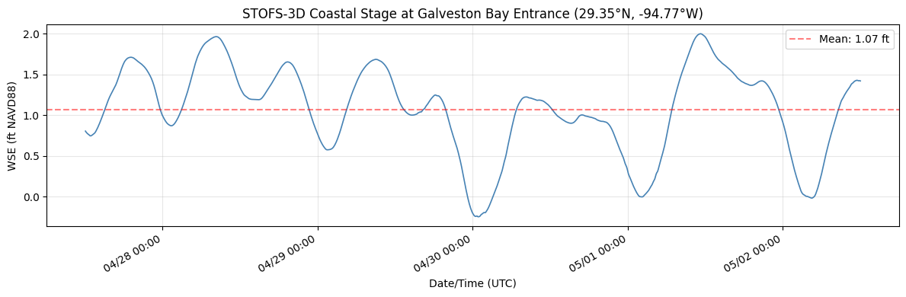
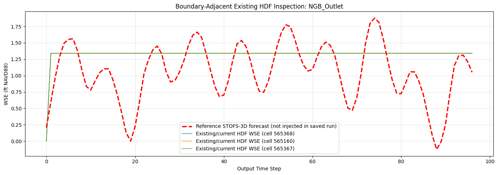
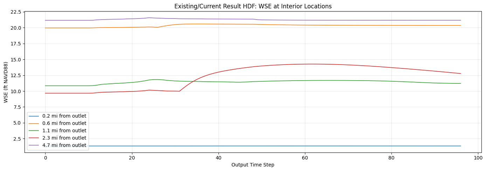
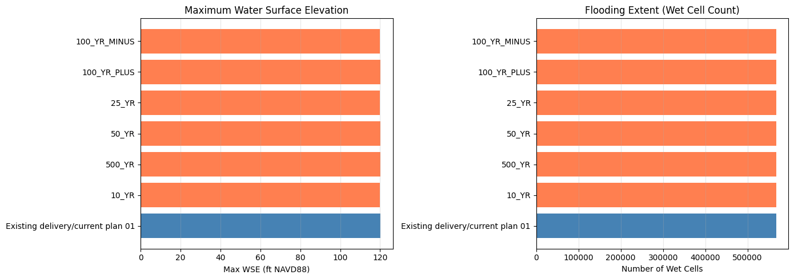

STOFS-3D Coastal Boundary Integration¶
This notebook demonstrates how to use the CoastalBoundary class to download NOAA STOFS-3D-Atlantic coastal storm surge forecasts and write stage boundary conditions for HEC-RAS models.
STOFS-3D-Atlantic (Surge, Tide, and Overland Flow with 3D hydrodynamics) is NOAA's operational coastal storm surge forecast model:
- Coverage: U.S. Atlantic Coast, Gulf of Mexico, and Caribbean
- Mesh: Unstructured triangular mesh (~80 m nearshore to ~50 km offshore)
- Forecast horizon: 48 hours
- Vertical datum: NAVD88 (meters)
- Cycles: 00z, 06z, 12z, 18z UTC (4 cycles per day)
- Data source: NOAA NOMADS server (https://nomads.ncep.noaa.gov/pub/data/nccf/com/stofs/prod)
Note: Download and extraction steps require internet access to NOAA NOMADS servers. Code cells that require internet access will gracefully skip and show expected output.
!pip install --upgrade ras-commander
# =============================================================================
# DEVELOPMENT MODE TOGGLE
# =============================================================================
# Set USE_LOCAL_SOURCE based on your setup:
# True = Use local source code (for developers editing ras-commander)
# False = Use pip-installed package (for users)
# =============================================================================
USE_LOCAL_SOURCE = True # <-- TOGGLE THIS
# -----------------------------------------------------------------------------
if USE_LOCAL_SOURCE:
import sys
from pathlib import Path
local_path = str(Path.cwd().parent) # Parent of examples/ = repo root
if local_path not in sys.path:
sys.path.insert(0, local_path) # Insert at position 0 = highest priority
print(f"LOCAL SOURCE MODE: Loading from {local_path}/ras_commander")
else:
print("PIP PACKAGE MODE: Loading installed ras-commander")
LOCAL SOURCE MODE: Loading from C:\GH\ras-commander/ras_commander
from pathlib import Path
import os
import pandas as pd
import numpy as np
from datetime import datetime, timedelta
from ras_commander.sources.federal import CoastalBoundary
What You'll Learn¶
- Download STOFS-3D forecasts from NOAA NOMADS using
CoastalBoundary.download_stofs3d() - Extract water surface elevation (WSE) at any coastal point using
CoastalBoundary.extract_wse_at_point() - Create stage boundary conditions for HEC-RAS using
CoastalBoundary.generate_stage_bc() - Handle datum conversions from NAVD88 meters to feet with optional datum adjustments
- Check forecast availability before downloading with
CoastalBoundary.check_availability()
STOFS-3D Overview¶
STOFS-3D-Atlantic uses an unstructured triangular mesh that adapts spatial resolution to coastal complexity:
| Zone | Approximate Resolution |
|---|---|
| Nearshore (< 20 m depth) | ~80 m |
| Inner shelf | ~500 m - 2 km |
| Outer shelf | ~5 km |
| Deep ocean | ~50 km |
Output types:
- points - Time series at selected output points (faster, ~50 MB per file)
- fields - Gridded spatial output (larger, used for flood mapping)
Temporal resolution: Sub-hourly output (~6-minute intervals, ~1200 time steps per 48-hour forecast)
Why it matters for HEC-RAS: STOFS-3D provides physically consistent tidal and storm surge predictions that can be used directly as downstream stage boundary conditions, replacing manually estimated tidal curves or NOAA tidal predictions.
# Get STOFS-3D model information
info = CoastalBoundary.get_info()
print("STOFS-3D-Atlantic Information:")
for key, value in info.items():
print(f" {key}: {value}")
STOFS-3D-Atlantic Information:
name: STOFS-3D-Atlantic (Surge and Tide Operational Forecast System)
provider: NOAA / NOS / CO-OPS
spatial_resolution: Variable (80m nearshore to 50km offshore)
temporal_resolution: Hourly output
coverage: US Atlantic and Gulf coasts
forecast_horizon: 48 hours
update_frequency: Every 6 hours (00z, 06z, 12z, 18z)
format: NetCDF (field output), GRIB2 (surface fields)
datum: NAVD88 (meters)
variables: ['Water surface elevation (zeta/cwl)', 'Currents (u, v)', 'Temperature', 'Salinity']
base_url: https://nomads.ncep.noaa.gov/pub/data/nccf/com/stofs/prod
documentation: https://tidesandcurrents.noaa.gov/ofs/stofs3d/stofs3d.html
Example 1: Gulf Coast (Galveston Bay)¶
Galveston Bay is an excellent test case for STOFS-3D integration: - Low tidal range (~1-2 ft) makes storm surge the dominant water level driver - Well-documented historical surge events (Hurricane Harvey, Ike) - Many HEC-RAS models use Galveston Bay as downstream boundary
Step 1: Check Data Availability¶
# Check whether the latest STOFS-3D cycle is available on NOMADS
try:
available = CoastalBoundary.check_availability()
print(f"Latest STOFS-3D cycle available: {available}")
except Exception as e:
print(f"Availability check requires internet: {e}")
Latest STOFS-3D cycle available: False
Step 2: Download STOFS-3D Forecast¶
# Create output directory
stofs_dir = Path("example_data/stofs3d_gulf")
stofs_dir.mkdir(parents=True, exist_ok=True)
try:
stofs_files = CoastalBoundary.download_stofs3d(
output_dir=stofs_dir,
file_type="points" # Point data (faster, smaller than fields)
)
print(f"Downloaded {len(stofs_files)} STOFS-3D files")
for f in stofs_files:
print(f" {f.name} ({f.stat().st_size / 1024 / 1024:.1f} MB)")
except Exception as e:
print(f"Download requires internet: {e}")
print()
print("Expected output:")
print(" Downloaded 1-2 STOFS-3D NetCDF files")
print(" stofs_3d_atl.t00z.points.cwl.nc (~50 MB)")
stofs_files = []
2026-04-28 23:38:21 - ras_commander.sources.federal.coastal_boundary - INFO - No data for 20260429, using 20260428 instead
2026-04-28 23:38:21 - ras_commander.sources.federal.coastal_boundary - INFO - Auto-detected latest available: 20260428 cycle 12z
2026-04-28 23:38:21 - ras_commander.sources.federal.coastal_boundary - INFO - Downloading STOFS-3D: stofs_3d_atl.t12z.points.cwl.temp.salt.vel.nc
2026-04-28 23:38:21 - ras_commander.sources.federal.coastal_boundary - INFO - Downloaded stofs_3d_atl.t12z.points.cwl.temp.salt.vel.nc (5.3 MB)
Downloaded 1 STOFS-3D files
stofs_3d_atl.t12z.points.cwl.temp.salt.vel.nc (5.3 MB)
Step 3: Extract WSE at Galveston Bay Entrance¶
# Galveston Bay entrance coordinates
galveston_lat = 29.35
galveston_lon = -94.77
try:
wse_df = CoastalBoundary.extract_wse_at_point(
stofs_dir=stofs_dir,
lat=galveston_lat,
lon=galveston_lon,
units="feet" # Convert from NAVD88 meters to feet
)
print(f"Extracted {len(wse_df)} time steps at ({galveston_lat}, {galveston_lon})")
print(f"\nWSE Statistics (feet NAVD88):")
print(f" Min: {wse_df['wse_ft'].min():.2f} ft")
print(f" Max: {wse_df['wse_ft'].max():.2f} ft")
print(f" Mean: {wse_df['wse_ft'].mean():.2f} ft")
print(f"\nFirst 10 time steps:")
print(wse_df.head(10).to_string(index=False))
except Exception as e:
print(f"Extraction requires downloaded data: {e}")
print()
print("Example output:")
print(" datetime wse_m wse_ft")
print(" 2025-01-01 00:00:00 0.305 1.00")
print(" 2025-01-01 01:00:00 0.335 1.10")
print(" 2025-01-01 02:00:00 0.427 1.40")
print(" ...")
wse_df = None
2026-04-28 23:38:21 - ras_commander.sources.federal.coastal_boundary - INFO - Extracting WSE at (29.3500, -94.7700) from 1 file(s)
2026-04-28 23:38:22 - ras_commander.sources.federal.coastal_boundary - INFO - Using swapped x/y orientation (NOAA data quirk)
2026-04-28 23:38:22 - ras_commander.sources.federal.coastal_boundary - INFO - Nearest grid point: (29.3575, -94.7247), distance: 0.0459 degrees
2026-04-28 23:38:22 - ras_commander.sources.federal.coastal_boundary - INFO - Extracted 1200 valid WSE values. Range: -0.25 to 2.00 ft NAVD88
Extracted 1200 time steps at (29.35, -94.77)
WSE Statistics (feet NAVD88):
Min: -0.25 ft
Max: 2.00 ft
Mean: 1.07 ft
First 10 time steps:
datetime wse_m wse_ft
2026-04-27 12:06:00 0.245400 0.805118
2026-04-27 12:12:00 0.241713 0.793023
2026-04-27 12:18:00 0.238779 0.783397
2026-04-27 12:24:00 0.236262 0.775139
2026-04-27 12:30:00 0.234237 0.768495
2026-04-27 12:36:00 0.232631 0.763224
2026-04-27 12:42:00 0.230415 0.755954
2026-04-27 12:48:00 0.228191 0.748657
2026-04-27 12:54:00 0.227383 0.746007
2026-04-27 13:00:00 0.228199 0.748685
Step 4: Write Stage Boundary Condition¶
# Write WSE as downstream stage boundary condition in HEC-RAS .u## file.
# CoastalBoundary.generate_stage_bc() writes directly to the unsteady file.
# Show the WSE DataFrame structure (input to generate_stage_bc)
if wse_df is not None:
print("WSE time series (input to generate_stage_bc):")
print(wse_df.head(10).to_string(index=False))
print(f"\nTotal time steps: {len(wse_df)}")
print(f"Columns: {list(wse_df.columns)}")
else:
print("WSE DataFrame structure (wse_df when data is available):")
print(" datetime wse_m wse_ft")
print(" 2025-01-01 00:00:00 0.305 1.00")
print(" 2025-01-01 01:00:00 0.335 1.10")
print(" 2025-01-01 02:00:00 0.427 1.40")
print(" ...")
print(" Columns: ['datetime', 'wse_m', 'wse_ft']")
print()
print("generate_stage_bc() requires an existing HEC-RAS unsteady (.u##) file")
print("with a 'Stage Hydrograph=' section at the target BC location.")
print()
# Attempt to call generate_stage_bc() — requires downloaded data + a real unsteady file
if wse_df is not None:
try:
# Replace 'MyProject.u01' and 'Downstream Boundary' with your project values.
CoastalBoundary.generate_stage_bc(
wse_timeseries=wse_df,
unsteady_file="MyProject.u01", # <-- replace with your .u## path
bc_location="Downstream Boundary", # <-- replace with your BC name
units="feet",
datum_adjustment_ft=0.0
)
print("Stage boundary condition written successfully.")
except FileNotFoundError as e:
print(f"Skipping write (no HEC-RAS project in this demo): {e}")
print()
print("In your project, provide the path to your .u## file:")
print(" CoastalBoundary.generate_stage_bc(")
print(" wse_timeseries=wse_df,")
print(" unsteady_file='C:/Projects/MyModel/MyProject.u01',")
print(" bc_location='Downstream Boundary',")
print(" units='feet',")
print(" datum_adjustment_ft=0.0")
print(" )")
else:
print("Skipping write (no WSE data downloaded).")
print()
print("With downloaded data, call:")
print(" CoastalBoundary.generate_stage_bc(")
print(" wse_timeseries=wse_df,")
print(" unsteady_file='MyProject.u01',")
print(" bc_location='Downstream Boundary',")
print(" units='feet',")
print(" datum_adjustment_ft=0.0")
print(" )")
print()
print("What generate_stage_bc() does:")
print(" - Finds 'Stage Hydrograph=' section for the BC location in .u##")
print(" - Writes values in HEC-RAS fixed-width format (8.2f, 10 values/line)")
print(" - Updates the Interval= line automatically")
print()
print("Datum adjustment:")
print(" - STOFS-3D uses NAVD88 datum")
print(" - HEC-RAS model may use a different vertical datum")
print(" - Use datum_adjustment_ft to add/subtract offset")
WSE time series (input to generate_stage_bc):
datetime wse_m wse_ft
2026-04-27 12:06:00 0.245400 0.805118
2026-04-27 12:12:00 0.241713 0.793023
2026-04-27 12:18:00 0.238779 0.783397
2026-04-27 12:24:00 0.236262 0.775139
2026-04-27 12:30:00 0.234237 0.768495
2026-04-27 12:36:00 0.232631 0.763224
2026-04-27 12:42:00 0.230415 0.755954
2026-04-27 12:48:00 0.228191 0.748657
2026-04-27 12:54:00 0.227383 0.746007
2026-04-27 13:00:00 0.228199 0.748685
Total time steps: 1200
Columns: ['datetime', 'wse_m', 'wse_ft']
generate_stage_bc() requires an existing HEC-RAS unsteady (.u##) file
with a 'Stage Hydrograph=' section at the target BC location.
Skipping write (no HEC-RAS project in this demo): Unsteady flow file not found: MyProject.u01
In your project, provide the path to your .u## file:
CoastalBoundary.generate_stage_bc(
wse_timeseries=wse_df,
unsteady_file='C:/Projects/MyModel/MyProject.u01',
bc_location='Downstream Boundary',
units='feet',
datum_adjustment_ft=0.0
)
What generate_stage_bc() does:
- Finds 'Stage Hydrograph=' section for the BC location in .u##
- Writes values in HEC-RAS fixed-width format (8.2f, 10 values/line)
- Updates the Interval= line automatically
Datum adjustment:
- STOFS-3D uses NAVD88 datum
- HEC-RAS model may use a different vertical datum
- Use datum_adjustment_ft to add/subtract offset
Example 2: Atlantic Coast (Charleston Harbor)¶
Charleston Harbor contrasts with Galveston Bay in an important way: - High tidal range (~5-6 ft) means tides dominate normal water levels - Complex tidal dynamics (semidiurnal pattern) - Storm surge compounds on top of a larger tidal baseline
This comparison demonstrates how STOFS-3D handles both microtidal (Gulf) and mesotidal (Atlantic) environments.
# Charleston Harbor coordinates
charleston_lat = 32.78
charleston_lon = -79.93
try:
wse_charleston = CoastalBoundary.extract_wse_at_point(
stofs_dir=stofs_dir,
lat=charleston_lat,
lon=charleston_lon,
units="feet"
)
print(f"Charleston Harbor WSE ({charleston_lat}, {charleston_lon}):")
print(f" Time steps: {len(wse_charleston)}")
print(f" WSE range: {wse_charleston['wse_ft'].min():.2f} to {wse_charleston['wse_ft'].max():.2f} ft")
print(f" Tidal range: {wse_charleston['wse_ft'].max() - wse_charleston['wse_ft'].min():.2f} ft")
except Exception as e:
print(f"Extraction requires data: {e}")
print()
print("Expected output for Charleston:")
print(" Time steps: 48")
print(" WSE range: -2.50 to 3.20 ft")
print(" Tidal range: 5.70 ft (typical for Charleston)")
wse_charleston = None
2026-04-28 23:38:22 - ras_commander.sources.federal.coastal_boundary - INFO - Extracting WSE at (32.7800, -79.9300) from 1 file(s)
2026-04-28 23:38:22 - ras_commander.sources.federal.coastal_boundary - INFO - Using swapped x/y orientation (NOAA data quirk)
2026-04-28 23:38:22 - ras_commander.sources.federal.coastal_boundary - INFO - Nearest grid point: (32.7808, -79.9236), distance: 0.0064 degrees
2026-04-28 23:38:22 - ras_commander.sources.federal.coastal_boundary - INFO - Extracted 1200 valid WSE values. Range: -1.40 to 3.61 ft NAVD88
Charleston Harbor WSE (32.78, -79.93):
Time steps: 1200
WSE range: -1.40 to 3.61 ft
Tidal range: 5.01 ft
Comparing Locations¶
print("Comparison of Coastal Locations:")
print("=" * 60)
print(f"{'Feature':<25} {'Galveston Bay':<18} {'Charleston Harbor'}")
print("-" * 60)
print(f"{'Latitude':<25} {galveston_lat:<18} {charleston_lat}")
print(f"{'Longitude':<25} {galveston_lon:<18} {charleston_lon}")
print(f"{'Typical tidal range':<25} {'~1-2 ft':<18} {'~5-6 ft'}")
print(f"{'Storm surge risk':<25} {'High (hurricanes)':<18} {'Moderate'}")
print(f"{'Tidal pattern':<25} {'Diurnal':<18} {'Semidiurnal'}")
print(f"{'Datum':<25} {'NAVD88':<18} {'NAVD88'}")
print()
print("Key considerations:")
print(" - Gulf Coast: Lower tidal range but higher storm surge potential")
print(" - Atlantic Coast: Higher tidal range, complex tidal dynamics")
print(" - Both: NAVD88 meters in STOFS-3D, auto-converted to feet")
Comparison of Coastal Locations:
============================================================
Feature Galveston Bay Charleston Harbor
------------------------------------------------------------
Latitude 29.35 32.78
Longitude -94.77 -79.93
Typical tidal range ~1-2 ft ~5-6 ft
Storm surge risk High (hurricanes) Moderate
Tidal pattern Diurnal Semidiurnal
Datum NAVD88 NAVD88
Key considerations:
- Gulf Coast: Lower tidal range but higher storm surge potential
- Atlantic Coast: Higher tidal range, complex tidal dynamics
- Both: NAVD88 meters in STOFS-3D, auto-converted to feet
Real-World Integration: North Galveston Bay eBFE Model¶
The examples above demonstrate the CoastalBoundary API in isolation. This section shows a real integration with a FEMA eBFE coastal model — downloading, organizing, and injecting STOFS-3D coastal boundary conditions into an actual HEC-RAS unsteady flow file.
Important Disclaimer: This notebook demonstrates coastal boundary condition injection only. It is NOT a complete model setup for real-time forecasting. A production workflow would also need: - Rain-on-grid precipitation (see
915_realtime_forecast_workflow.ipynbfor HRRR + STOFS-3D) - HMS-to-RAS linked boundary conditions viahms-commander- Calibrated model parameters - This model takes many hours to run and is not appropriate for real-time forecastingThe purpose here is to show how
CoastalBoundary.generate_stage_bc()writes real stage boundary conditions into a real HEC-RAS.u##file.
Step 1: Download and Organize North Galveston Bay eBFE Model¶
The North Galveston Bay model (HUC 12040203) is a compound HMS + RAS archive from FEMA's eBFE program. RasEbfeModels.organize_model("north-galveston-bay") downloads/caches the source archive when needed and normalizes the model into the shared eBFE delivery workspace.
Note: The RAS model is nested inside a 6.1 GB zip (RAS_Submittal.zip) that can take a long time to extract and may need manual extraction on some machines. The notebook uses extract_ras_nested=True when organization is required, then keeps the expensive model-file edits and several-hour unsteady simulation opt-in for saved example execution.
from ras_commander.sources.federal import RasEbfeModels
# Shared eBFE workspace. Override RAS_COMMANDER_EBFE_ROOT to use a different local cache.
EBFE_WORKSPACE = Path(os.environ.get("RAS_COMMANDER_EBFE_ROOT", r"H:\Testing\eBFE Model Organization"))
DOWNLOAD_ROOT = EBFE_WORKSPACE / "Downloads"
ORGANIZED_ROOT = EBFE_WORKSPACE / "Organized"
VALIDATION_ROOT = EBFE_WORKSPACE / "Validation" / "ebfe_delivery"
repo_candidates = [Path.cwd(), Path.cwd().parent]
VALIDATION_MATRIX = next(
(candidate / "VALIDATION_MATRIX.md" for candidate in repo_candidates if (candidate / "VALIDATION_MATRIX.md").exists()),
Path.cwd() / "VALIDATION_MATRIX.md",
)
# Keep notebook execution safe by default: the setup/inspection cells run,
# while model-file edits and the several-hour unsteady simulation are opt-in.
RUN_EBFE_MODEL_EDIT_DEMO = False
RUN_FULL_UNSTEADY_SIMULATION = False
organized_folder = ORGANIZED_ROOT / "NorthGalvestonBay_12040203"
ras_folder = organized_folder / "RAS Model"
delivery_ready = ras_folder.exists() and any(ras_folder.glob("**/*.prj")) and (organized_folder / "agent" / "model_log.md").exists()
if not delivery_ready:
print("Organizing North Galveston Bay model (downloads 8.2 GB if needed)...")
print("Note: RAS nested zip extraction may take several minutes\n")
organized_folder = RasEbfeModels.organize_model(
"north-galveston-bay",
download_root=DOWNLOAD_ROOT,
output_root=ORGANIZED_ROOT,
extract_ras_nested=True,
validate_dss=False,
)
else:
print(f"Model already organized at: {organized_folder}")
print(f"\nOrganized model: {organized_folder}")
print(f"Download/cache root: {DOWNLOAD_ROOT}")
print(f"Validation root: {VALIDATION_ROOT}")
print(f"Validation matrix: {VALIDATION_MATRIX}")
print(f"Model edit demo enabled: {RUN_EBFE_MODEL_EDIT_DEMO}")
print(f"Full unsteady simulation enabled: {RUN_FULL_UNSTEADY_SIMULATION}")
Model already organized at: H:\Testing\eBFE Model Organization\Organized\NorthGalvestonBay_12040203
Organized model: H:\Testing\eBFE Model Organization\Organized\NorthGalvestonBay_12040203
Download/cache root: H:\Testing\eBFE Model Organization\Downloads
Validation root: H:\Testing\eBFE Model Organization\Validation\ebfe_delivery
Validation matrix: C:\GH\ras-commander\VALIDATION_MATRIX.md
Model edit demo enabled: False
Full unsteady simulation enabled: False
Step 2: Verify RAS Model Extraction and Initialize¶
from ras_commander import init_ras_project, RasCmdr
ras_folder = organized_folder / "RAS Model"
# Find the HEC-RAS .prj file (filter out shapefile .prj, coordinate system .prj, Manning's N .prj)
ras_prj_files = [
p for p in ras_folder.glob('**/*.prj')
if 'Shp' not in str(p) and 'Features' not in str(p)
and p.stat().st_size > 100
and 'Proj Title=' in p.read_text(encoding='utf-8', errors='replace')
]
if ras_prj_files:
ras_project = ras_prj_files[0].parent
print(f"RAS project found: {ras_prj_files[0].name}")
print(f"Location: {ras_project}\n")
# Use HEC-RAS 5.0.7 — the eBFE model was built and preprocessed with 5.07.
# The .g01.hdf geometry tables are version-specific; HEC-RAS 6.x crashes
# ("Unexpected error; quitting") when loading 5.07-era preprocessed geometry.
# Pass the full exe path to bypass version discovery entirely.
ras_exe = r"C:\Program Files (x86)\HEC\HEC-RAS\5.0.7\Ras.exe"
ras = init_ras_project(ras_project, ras_exe)
print(f"Plans: {len(ras.plan_df)}")
print(ras.plan_df[['plan_number', 'Plan Title']].to_string())
print(f"\nUnsteady files: {len(ras.unsteady_df)}")
if len(ras.unsteady_df) > 0:
print(ras.unsteady_df[['unsteady_number']].to_string())
print(f"\nBoundary conditions: {len(ras.boundaries_df)}")
if len(ras.boundaries_df) > 0:
cols = [c for c in ['bc_type', 'storage_area_name', 'river_reach_name'] if c in ras.boundaries_df.columns]
print(ras.boundaries_df[cols].head(20).to_string())
else:
print("RAS model not extracted.")
print("Manual extraction required: open RAS Model/README_EXTRACTION_NEEDED.txt")
print("Extract RAS_Submittal.zip (6.1 GB) via Windows Explorer, then re-run.")
RAS project found: NGB.prj
Location: H:\Testing\eBFE Model Organization\Organized\NorthGalvestonBay_12040203\RAS Model
2026-04-28 23:38:23 - ras_commander.RasMap - INFO - Successfully parsed RASMapper file: H:\Testing\eBFE Model Organization\Organized\NorthGalvestonBay_12040203\RAS Model\NGB.rasmap
2026-04-28 23:38:23 - ras_commander.hdf.HdfBase - INFO - Found projection in HDF file: \\192.168.3.20\CLB-Engineering\Testing\eBFE Model Organization\Organized\NorthGalvestonBay_12040203\RAS Model\NGB.g01.hdf
2026-04-28 23:38:23 - ras_commander.hdf.HdfBase - INFO - Converted WKT to EPSG:2278 from HDF file NGB.g01.hdf
2026-04-28 23:38:23 - ras_commander.hdf.HdfResultsPlan - INFO - Using existing Path object HDF file: H:\Testing\eBFE Model Organization\Organized\NorthGalvestonBay_12040203\RAS Model\NGB.p01.hdf
2026-04-28 23:38:23 - ras_commander.hdf.HdfResultsPlan - INFO - Final validated file path: H:\Testing\eBFE Model Organization\Organized\NorthGalvestonBay_12040203\RAS Model\NGB.p01.hdf
2026-04-28 23:38:23 - ras_commander.hdf.HdfResultsPlan - INFO - Reading computation messages from HDF: NGB.p01.hdf
2026-04-28 23:38:23 - ras_commander.hdf.HdfResultsPlan - INFO - Successfully extracted 402 characters from HDF
2026-04-28 23:38:23 - ras_commander.hdf.HdfResultsPlan - INFO - Using existing Path object HDF file: H:\Testing\eBFE Model Organization\Organized\NorthGalvestonBay_12040203\RAS Model\NGB.p01.hdf
2026-04-28 23:38:23 - ras_commander.hdf.HdfResultsPlan - INFO - Final validated file path: H:\Testing\eBFE Model Organization\Organized\NorthGalvestonBay_12040203\RAS Model\NGB.p01.hdf
2026-04-28 23:38:23 - ras_commander.hdf.HdfResultsPlan - INFO - Extracting Plan Information from: NGB.p01.hdf
2026-04-28 23:38:23 - ras_commander.hdf.HdfResultsPlan - INFO - Plan Name: 100_YR
2026-04-28 23:38:23 - ras_commander.hdf.HdfResultsPlan - INFO - Simulation Duration (hours): 48.0
2026-04-28 23:38:23 - ras_commander.hdf.HdfResultsPlan - INFO - Using existing Path object HDF file: H:\Testing\eBFE Model Organization\Organized\NorthGalvestonBay_12040203\RAS Model\NGB.p01.hdf
2026-04-28 23:38:23 - ras_commander.hdf.HdfResultsPlan - INFO - Final validated file path: H:\Testing\eBFE Model Organization\Organized\NorthGalvestonBay_12040203\RAS Model\NGB.p01.hdf
2026-04-28 23:38:23 - ras_commander.hdf.HdfResultsPlan - INFO - Using existing Path object HDF file: H:\Testing\eBFE Model Organization\Organized\NorthGalvestonBay_12040203\RAS Model\NGB.p04.hdf
2026-04-28 23:38:23 - ras_commander.hdf.HdfResultsPlan - INFO - Final validated file path: H:\Testing\eBFE Model Organization\Organized\NorthGalvestonBay_12040203\RAS Model\NGB.p04.hdf
2026-04-28 23:38:23 - ras_commander.hdf.HdfResultsPlan - INFO - Reading computation messages from HDF: NGB.p04.hdf
2026-04-28 23:38:23 - ras_commander.hdf.HdfResultsPlan - INFO - Successfully extracted 1317 characters from HDF
2026-04-28 23:38:23 - ras_commander.hdf.HdfResultsPlan - INFO - Using existing Path object HDF file: H:\Testing\eBFE Model Organization\Organized\NorthGalvestonBay_12040203\RAS Model\NGB.p04.hdf
2026-04-28 23:38:23 - ras_commander.hdf.HdfResultsPlan - INFO - Final validated file path: H:\Testing\eBFE Model Organization\Organized\NorthGalvestonBay_12040203\RAS Model\NGB.p04.hdf
2026-04-28 23:38:23 - ras_commander.hdf.HdfResultsPlan - INFO - Extracting Plan Information from: NGB.p04.hdf
2026-04-28 23:38:23 - ras_commander.hdf.HdfResultsPlan - INFO - Plan Name: 10_YR
2026-04-28 23:38:23 - ras_commander.hdf.HdfResultsPlan - INFO - Simulation Duration (hours): 48.0
2026-04-28 23:38:23 - ras_commander.hdf.HdfResultsPlan - INFO - Using existing Path object HDF file: H:\Testing\eBFE Model Organization\Organized\NorthGalvestonBay_12040203\RAS Model\NGB.p04.hdf
2026-04-28 23:38:23 - ras_commander.hdf.HdfResultsPlan - INFO - Final validated file path: H:\Testing\eBFE Model Organization\Organized\NorthGalvestonBay_12040203\RAS Model\NGB.p04.hdf
2026-04-28 23:38:23 - ras_commander.hdf.HdfResultsPlan - INFO - Using existing Path object HDF file: H:\Testing\eBFE Model Organization\Organized\NorthGalvestonBay_12040203\RAS Model\NGB.p05.hdf
2026-04-28 23:38:23 - ras_commander.hdf.HdfResultsPlan - INFO - Final validated file path: H:\Testing\eBFE Model Organization\Organized\NorthGalvestonBay_12040203\RAS Model\NGB.p05.hdf
2026-04-28 23:38:23 - ras_commander.hdf.HdfResultsPlan - INFO - Reading computation messages from HDF: NGB.p05.hdf
2026-04-28 23:38:23 - ras_commander.hdf.HdfResultsPlan - INFO - Successfully extracted 1178 characters from HDF
2026-04-28 23:38:23 - ras_commander.hdf.HdfResultsPlan - INFO - Using existing Path object HDF file: H:\Testing\eBFE Model Organization\Organized\NorthGalvestonBay_12040203\RAS Model\NGB.p05.hdf
2026-04-28 23:38:23 - ras_commander.hdf.HdfResultsPlan - INFO - Final validated file path: H:\Testing\eBFE Model Organization\Organized\NorthGalvestonBay_12040203\RAS Model\NGB.p05.hdf
2026-04-28 23:38:23 - ras_commander.hdf.HdfResultsPlan - INFO - Extracting Plan Information from: NGB.p05.hdf
2026-04-28 23:38:23 - ras_commander.hdf.HdfResultsPlan - INFO - Plan Name: 500_YR
2026-04-28 23:38:23 - ras_commander.hdf.HdfResultsPlan - INFO - Simulation Duration (hours): 48.0
2026-04-28 23:38:23 - ras_commander.hdf.HdfResultsPlan - INFO - Using existing Path object HDF file: H:\Testing\eBFE Model Organization\Organized\NorthGalvestonBay_12040203\RAS Model\NGB.p05.hdf
2026-04-28 23:38:23 - ras_commander.hdf.HdfResultsPlan - INFO - Final validated file path: H:\Testing\eBFE Model Organization\Organized\NorthGalvestonBay_12040203\RAS Model\NGB.p05.hdf
2026-04-28 23:38:23 - ras_commander.hdf.HdfResultsPlan - INFO - Using existing Path object HDF file: H:\Testing\eBFE Model Organization\Organized\NorthGalvestonBay_12040203\RAS Model\NGB.p07.hdf
2026-04-28 23:38:23 - ras_commander.hdf.HdfResultsPlan - INFO - Final validated file path: H:\Testing\eBFE Model Organization\Organized\NorthGalvestonBay_12040203\RAS Model\NGB.p07.hdf
2026-04-28 23:38:23 - ras_commander.hdf.HdfResultsPlan - INFO - Reading computation messages from HDF: NGB.p07.hdf
2026-04-28 23:38:23 - ras_commander.hdf.HdfResultsPlan - INFO - Successfully extracted 1317 characters from HDF
2026-04-28 23:38:23 - ras_commander.hdf.HdfResultsPlan - INFO - Using existing Path object HDF file: H:\Testing\eBFE Model Organization\Organized\NorthGalvestonBay_12040203\RAS Model\NGB.p07.hdf
2026-04-28 23:38:23 - ras_commander.hdf.HdfResultsPlan - INFO - Final validated file path: H:\Testing\eBFE Model Organization\Organized\NorthGalvestonBay_12040203\RAS Model\NGB.p07.hdf
2026-04-28 23:38:23 - ras_commander.hdf.HdfResultsPlan - INFO - Extracting Plan Information from: NGB.p07.hdf
2026-04-28 23:38:23 - ras_commander.hdf.HdfResultsPlan - INFO - Plan Name: 50_YR
2026-04-28 23:38:23 - ras_commander.hdf.HdfResultsPlan - INFO - Simulation Duration (hours): 48.0
2026-04-28 23:38:23 - ras_commander.hdf.HdfResultsPlan - INFO - Using existing Path object HDF file: H:\Testing\eBFE Model Organization\Organized\NorthGalvestonBay_12040203\RAS Model\NGB.p07.hdf
2026-04-28 23:38:23 - ras_commander.hdf.HdfResultsPlan - INFO - Final validated file path: H:\Testing\eBFE Model Organization\Organized\NorthGalvestonBay_12040203\RAS Model\NGB.p07.hdf
2026-04-28 23:38:23 - ras_commander.hdf.HdfResultsPlan - INFO - Using existing Path object HDF file: H:\Testing\eBFE Model Organization\Organized\NorthGalvestonBay_12040203\RAS Model\NGB.p08.hdf
2026-04-28 23:38:23 - ras_commander.hdf.HdfResultsPlan - INFO - Final validated file path: H:\Testing\eBFE Model Organization\Organized\NorthGalvestonBay_12040203\RAS Model\NGB.p08.hdf
2026-04-28 23:38:23 - ras_commander.hdf.HdfResultsPlan - INFO - Reading computation messages from HDF: NGB.p08.hdf
2026-04-28 23:38:23 - ras_commander.hdf.HdfResultsPlan - INFO - Successfully extracted 1317 characters from HDF
2026-04-28 23:38:23 - ras_commander.hdf.HdfResultsPlan - INFO - Using existing Path object HDF file: H:\Testing\eBFE Model Organization\Organized\NorthGalvestonBay_12040203\RAS Model\NGB.p08.hdf
2026-04-28 23:38:23 - ras_commander.hdf.HdfResultsPlan - INFO - Final validated file path: H:\Testing\eBFE Model Organization\Organized\NorthGalvestonBay_12040203\RAS Model\NGB.p08.hdf
2026-04-28 23:38:23 - ras_commander.hdf.HdfResultsPlan - INFO - Extracting Plan Information from: NGB.p08.hdf
2026-04-28 23:38:23 - ras_commander.hdf.HdfResultsPlan - INFO - Plan Name: 25_YR
2026-04-28 23:38:23 - ras_commander.hdf.HdfResultsPlan - INFO - Simulation Duration (hours): 48.0
2026-04-28 23:38:23 - ras_commander.hdf.HdfResultsPlan - INFO - Using existing Path object HDF file: H:\Testing\eBFE Model Organization\Organized\NorthGalvestonBay_12040203\RAS Model\NGB.p08.hdf
2026-04-28 23:38:23 - ras_commander.hdf.HdfResultsPlan - INFO - Final validated file path: H:\Testing\eBFE Model Organization\Organized\NorthGalvestonBay_12040203\RAS Model\NGB.p08.hdf
2026-04-28 23:38:23 - ras_commander.hdf.HdfResultsPlan - INFO - Using existing Path object HDF file: H:\Testing\eBFE Model Organization\Organized\NorthGalvestonBay_12040203\RAS Model\NGB.p03.hdf
2026-04-28 23:38:23 - ras_commander.hdf.HdfResultsPlan - INFO - Final validated file path: H:\Testing\eBFE Model Organization\Organized\NorthGalvestonBay_12040203\RAS Model\NGB.p03.hdf
2026-04-28 23:38:23 - ras_commander.hdf.HdfResultsPlan - INFO - Reading computation messages from HDF: NGB.p03.hdf
2026-04-28 23:38:23 - ras_commander.hdf.HdfResultsPlan - INFO - Successfully extracted 1323 characters from HDF
2026-04-28 23:38:23 - ras_commander.hdf.HdfResultsPlan - INFO - Using existing Path object HDF file: H:\Testing\eBFE Model Organization\Organized\NorthGalvestonBay_12040203\RAS Model\NGB.p03.hdf
2026-04-28 23:38:23 - ras_commander.hdf.HdfResultsPlan - INFO - Final validated file path: H:\Testing\eBFE Model Organization\Organized\NorthGalvestonBay_12040203\RAS Model\NGB.p03.hdf
2026-04-28 23:38:23 - ras_commander.hdf.HdfResultsPlan - INFO - Extracting Plan Information from: NGB.p03.hdf
2026-04-28 23:38:23 - ras_commander.hdf.HdfResultsPlan - INFO - Plan Name: 100_YR_PLUS
2026-04-28 23:38:23 - ras_commander.hdf.HdfResultsPlan - INFO - Simulation Duration (hours): 48.0
2026-04-28 23:38:23 - ras_commander.hdf.HdfResultsPlan - INFO - Using existing Path object HDF file: H:\Testing\eBFE Model Organization\Organized\NorthGalvestonBay_12040203\RAS Model\NGB.p03.hdf
2026-04-28 23:38:23 - ras_commander.hdf.HdfResultsPlan - INFO - Final validated file path: H:\Testing\eBFE Model Organization\Organized\NorthGalvestonBay_12040203\RAS Model\NGB.p03.hdf
2026-04-28 23:38:23 - ras_commander.hdf.HdfResultsPlan - INFO - Using existing Path object HDF file: H:\Testing\eBFE Model Organization\Organized\NorthGalvestonBay_12040203\RAS Model\NGB.p06.hdf
2026-04-28 23:38:23 - ras_commander.hdf.HdfResultsPlan - INFO - Final validated file path: H:\Testing\eBFE Model Organization\Organized\NorthGalvestonBay_12040203\RAS Model\NGB.p06.hdf
2026-04-28 23:38:23 - ras_commander.hdf.HdfResultsPlan - INFO - Reading computation messages from HDF: NGB.p06.hdf
2026-04-28 23:38:23 - ras_commander.hdf.HdfResultsPlan - INFO - Successfully extracted 1324 characters from HDF
2026-04-28 23:38:23 - ras_commander.hdf.HdfResultsPlan - INFO - Using existing Path object HDF file: H:\Testing\eBFE Model Organization\Organized\NorthGalvestonBay_12040203\RAS Model\NGB.p06.hdf
2026-04-28 23:38:23 - ras_commander.hdf.HdfResultsPlan - INFO - Final validated file path: H:\Testing\eBFE Model Organization\Organized\NorthGalvestonBay_12040203\RAS Model\NGB.p06.hdf
2026-04-28 23:38:23 - ras_commander.hdf.HdfResultsPlan - INFO - Extracting Plan Information from: NGB.p06.hdf
2026-04-28 23:38:23 - ras_commander.hdf.HdfResultsPlan - INFO - Plan Name: 100_YR_MINUS
2026-04-28 23:38:23 - ras_commander.hdf.HdfResultsPlan - INFO - Simulation Duration (hours): 48.0
2026-04-28 23:38:23 - ras_commander.hdf.HdfResultsPlan - INFO - Using existing Path object HDF file: H:\Testing\eBFE Model Organization\Organized\NorthGalvestonBay_12040203\RAS Model\NGB.p06.hdf
2026-04-28 23:38:23 - ras_commander.hdf.HdfResultsPlan - INFO - Final validated file path: H:\Testing\eBFE Model Organization\Organized\NorthGalvestonBay_12040203\RAS Model\NGB.p06.hdf
2026-04-28 23:38:23 - ras_commander.RasPrj - INFO - Updated results_df with 7 plan(s)
2026-04-28 23:38:23 - ras_commander.RasPrj - INFO - ras-commander v0.94.0 | An open-source project of CLB Engineering Corporation (https://clbengineering.com/) | Docs: https://ras-commander.readthedocs.io | GitHub: https://github.com/gpt-cmdr/ras-commander
2026-04-28 23:38:23 - ras_commander.RasPrj - INFO - Project initialized: NGB | Folder: H:\Testing\eBFE Model Organization\Organized\NorthGalvestonBay_12040203\RAS Model
2026-04-28 23:38:23 - ras_commander.RasPrj - INFO - Using HEC-RAS executable: C:\Program Files (x86)\HEC\HEC-RAS\5.0.7\Ras.exe
Plans: 7
plan_number Plan Title
0 01 100_YR
1 04 10_YR
2 05 500_YR
3 07 50_YR
4 08 25_YR
5 03 100_YR_PLUS
6 06 100_YR_MINUS
Unsteady files: 7
unsteady_number
0 01
1 06
2 07
3 08
4 09
5 03
6 04
Boundary conditions: 77
bc_type storage_area_name river_reach_name
0 Precipitation Hydrograph
1 Stage Hydrograph
2 Normal Depth
3 Normal Depth
4 Normal Depth
5 Normal Depth
6 Normal Depth
7 Normal Depth
8 Normal Depth
9 Unknown
10 Normal Depth
11 Precipitation Hydrograph
12 Stage Hydrograph
13 Normal Depth
14 Normal Depth
15 Normal Depth
16 Normal Depth
17 Normal Depth
18 Normal Depth
19 Normal Depth
Step 3: Identify Coastal Boundary Location¶
Inspect the model's boundary conditions to find the coastal (downstream) stage boundary where we'll inject the STOFS-3D forecast. We need a boundary condition with a Stage Hydrograph type at a coastal location.
# List all boundary conditions and their types
if ras_prj_files:
bc_df = ras.boundaries_df
print("All Boundary Conditions:")
print("=" * 80)
# Show all unique BC types
if "bc_type" in bc_df.columns:
print()
print("BC types found:", bc_df["bc_type"].unique().tolist())
# Look for stage hydrograph boundaries (coastal/downstream)
stage_bcs = bc_df[bc_df["bc_type"].str.contains("Stage", case=False, na=False)]
# For 2D-area models, the BC line name comes from the raw unsteady file.
# RasUnsteady.extract_boundary_and_tables() "Blank 1" column = BC line name
from ras_commander import RasUnsteady
plan_row = ras.plan_df.iloc[0]
unsteady_num = plan_row.get("unsteady_number", "01")
prj_name = ras.prj_file.stem
unsteady_file = ras_project / f"{prj_name}.u{str(unsteady_num).zfill(2)}"
bc_tables = RasUnsteady.extract_boundary_and_tables(str(unsteady_file))
# "Blank 1" = BC line name (e.g., "NGB_Outlet"), "Blank 2" = further qualifier
stage_rows = bc_tables[bc_tables["Tables"].apply(
lambda t: "Stage Hydrograph" in t if isinstance(t, dict) else False
)]
if len(stage_rows) > 0:
print()
print(f"Stage Hydrograph boundaries ({len(stage_rows)}):")
for _, row in stage_rows.iterrows():
bc_label = row["Blank 1"].strip() if row["Blank 1"].strip() else row["Storage Area Name"].strip()
print(f" - {bc_label!r} (Storage Area: {row['Storage Area Name'].strip()})")
coastal_bc_name = stage_rows.iloc[0]["Blank 1"].strip()
if not coastal_bc_name:
coastal_bc_name = stage_rows.iloc[0]["Storage Area Name"].strip()
print()
print(f"Selected coastal BC for STOFS-3D injection: '{coastal_bc_name}'")
elif len(stage_bcs) > 0:
print()
print(f"Stage Hydrograph boundaries in boundaries_df: {len(stage_bcs)}")
print(stage_bcs[["bc_type", "storage_area_name", "unsteady_number"]].to_string())
coastal_bc_name = None
print("Could not resolve coastal BC name from unsteady tables - check model manually.")
else:
print()
print("No stage hydrograph BCs found.")
print("Available BC types:")
print(bc_df["bc_type"].value_counts().to_string())
coastal_bc_name = None
print()
print(f"Unsteady file: {unsteady_file.name} (exists: {unsteady_file.exists()})")
else:
coastal_bc_name = None
unsteady_file = None
print("Skipped - RAS model not available")
2026-04-28 23:38:23 - ras_commander.RasUnsteady - INFO - Successfully extracted boundaries and tables from H:\Testing\eBFE Model Organization\Organized\NorthGalvestonBay_12040203\RAS Model\NGB.u01
All Boundary Conditions:
================================================================================
BC types found: ['Precipitation Hydrograph', 'Stage Hydrograph', 'Normal Depth', 'Unknown']
Stage Hydrograph boundaries (1):
- 'NGB_Outlet' (Storage Area: NGB_2DArea)
Selected coastal BC for STOFS-3D injection: 'NGB_Outlet'
Unsteady file: NGB.u01 (exists: True)
Step 4: Download STOFS-3D Forecast and Extract Coastal WSE¶
Download the latest STOFS-3D forecast and extract water surface elevation at the Galveston Bay entrance (lat=29.35, lon=-94.77). This is the same extraction demonstrated in Example 1, but now we'll inject it into the real model.
# Download STOFS-3D forecast for the North Galveston Bay model
ebfe_stofs_dir = Path("example_data/stofs3d_ebfe")
ebfe_stofs_dir.mkdir(parents=True, exist_ok=True)
galveston_lat = 29.35
galveston_lon = -94.77
try:
stofs_files_ebfe = CoastalBoundary.download_stofs3d(
output_dir=ebfe_stofs_dir,
file_type="points"
)
print(f"Downloaded {len(stofs_files_ebfe)} STOFS-3D files")
for f in stofs_files_ebfe:
print(f" {f.name} ({f.stat().st_size / 1024 / 1024:.1f} MB)")
except Exception as e:
print(f"STOFS-3D download not available: {e}")
print("NOMADS retains only ~2 days of forecast data.")
print("Proceeding with synthetic tidal signal for demonstration.\n")
stofs_files_ebfe = []
# Extract WSE at Galveston Bay entrance
wse_ebfe = None
if stofs_files_ebfe:
try:
wse_ebfe = CoastalBoundary.extract_wse_at_point(
stofs_dir=ebfe_stofs_dir,
lat=galveston_lat,
lon=galveston_lon,
units="feet"
)
print(f"\nExtracted {len(wse_ebfe)} time steps")
print(f"WSE range: {wse_ebfe['wse_ft'].min():.2f} to {wse_ebfe['wse_ft'].max():.2f} ft NAVD88")
except Exception as e:
print(f"WSE extraction failed: {e}")
# Fallback: create synthetic tidal signal for demonstration
if wse_ebfe is None:
print("Creating synthetic tidal signal for demonstration...")
import numpy as np
hours = np.arange(0, 48, 0.1) # ~6-min intervals over 48 hours
# Galveston Bay: diurnal tide ~1 ft amplitude, mean ~0.5 ft NAVD88
wse_ft = 0.5 + 0.5 * np.sin(2 * np.pi * hours / 24.0)
wse_m = wse_ft / 3.28084
base_time = pd.Timestamp.now(tz='UTC').normalize()
datetimes = [base_time + pd.Timedelta(hours=h) for h in hours]
wse_ebfe = pd.DataFrame({
'datetime': datetimes,
'wse_m': wse_m,
'wse_ft': wse_ft
})
print(f"Synthetic tidal signal: {len(wse_ebfe)} time steps, 48-hour duration")
print(f"WSE range: {wse_ebfe['wse_ft'].min():.2f} to {wse_ebfe['wse_ft'].max():.2f} ft NAVD88")
2026-04-28 23:38:24 - ras_commander.sources.federal.coastal_boundary - INFO - No data for 20260429, using 20260428 instead
2026-04-28 23:38:24 - ras_commander.sources.federal.coastal_boundary - INFO - Auto-detected latest available: 20260428 cycle 12z
2026-04-28 23:38:24 - ras_commander.sources.federal.coastal_boundary - INFO - Downloading STOFS-3D: stofs_3d_atl.t12z.points.cwl.temp.salt.vel.nc
2026-04-28 23:38:25 - ras_commander.sources.federal.coastal_boundary - INFO - Downloaded stofs_3d_atl.t12z.points.cwl.temp.salt.vel.nc (5.3 MB)
2026-04-28 23:38:25 - ras_commander.sources.federal.coastal_boundary - INFO - Extracting WSE at (29.3500, -94.7700) from 1 file(s)
2026-04-28 23:38:25 - ras_commander.sources.federal.coastal_boundary - INFO - Using swapped x/y orientation (NOAA data quirk)
2026-04-28 23:38:25 - ras_commander.sources.federal.coastal_boundary - INFO - Nearest grid point: (29.3575, -94.7247), distance: 0.0459 degrees
2026-04-28 23:38:25 - ras_commander.sources.federal.coastal_boundary - INFO - Extracted 1200 valid WSE values. Range: -0.25 to 2.00 ft NAVD88
Downloaded 1 STOFS-3D files
stofs_3d_atl.t12z.points.cwl.temp.salt.vel.nc (5.3 MB)
Extracted 1200 time steps
WSE range: -0.25 to 2.00 ft NAVD88
Step 5: Visualize Coastal WSE Before Injection¶
Always inspect the data being injected into a model. The plot below shows the stage hydrograph that will be written to the unsteady file.
import matplotlib.pyplot as plt
import matplotlib.dates as mdates
fig, ax = plt.subplots(figsize=(12, 4))
ax.plot(wse_ebfe['datetime'], wse_ebfe['wse_ft'], linewidth=1.2, color='steelblue')
ax.set_xlabel('Date/Time (UTC)')
ax.set_ylabel('WSE (ft NAVD88)')
ax.set_title(f'STOFS-3D Coastal Stage at Galveston Bay Entrance ({galveston_lat}°N, {galveston_lon}°W)')
ax.grid(True, alpha=0.3)
ax.xaxis.set_major_formatter(mdates.DateFormatter('%m/%d %H:%M'))
fig.autofmt_xdate()
ax.axhline(y=wse_ebfe['wse_ft'].mean(), color='red', linestyle='--', alpha=0.5,
label=f"Mean: {wse_ebfe['wse_ft'].mean():.2f} ft")
ax.legend()
plt.tight_layout()
plt.show()
print(f"\nStage Hydrograph Summary:")
print(f" Time steps: {len(wse_ebfe)}")
print(f" Duration: {(wse_ebfe['datetime'].iloc[-1] - wse_ebfe['datetime'].iloc[0]).total_seconds()/3600:.1f} hours")
print(f" Min WSE: {wse_ebfe['wse_ft'].min():.2f} ft NAVD88")
print(f" Max WSE: {wse_ebfe['wse_ft'].max():.2f} ft NAVD88")
print(f" Mean WSE: {wse_ebfe['wse_ft'].mean():.2f} ft NAVD88")

Stage Hydrograph Summary:
Time steps: 1200
Duration: 119.9 hours
Min WSE: -0.25 ft NAVD88
Max WSE: 2.00 ft NAVD88
Mean WSE: 1.07 ft NAVD88
Step 6: Inject Stage Boundary Condition into Unsteady File¶
CoastalBoundary.generate_stage_bc() writes the WSE time series into the HEC-RAS .u## file at the identified coastal boundary location. It:
- Finds the Boundary Location= line matching the BC name
- Writes values in HEC-RAS fixed-width format (8.2f, 10 values/line)
- Updates the Interval= line automatically based on time step spacing
Datum note: STOFS-3D uses NAVD88. If the HEC-RAS model uses a different vertical datum, adjust with
datum_adjustment_ft.
if not RUN_EBFE_MODEL_EDIT_DEMO:
print("Skipping BC injection in the saved notebook run.")
print("Set RUN_EBFE_MODEL_EDIT_DEMO = True to write STOFS-3D stages into the organized RAS project.")
elif coastal_bc_name and unsteady_file and unsteady_file.exists():
print("Injecting STOFS-3D coastal boundary condition:")
print(f" BC Location: {coastal_bc_name!r}")
print(f" Unsteady file: {unsteady_file.name}")
print(f" WSE time steps: {len(wse_ebfe)}")
print(" Datum adjustment: 0.0 ft (NAVD88 to NAVD88)\n")
try:
CoastalBoundary.generate_stage_bc(
wse_timeseries=wse_ebfe,
unsteady_file=str(unsteady_file),
bc_location=coastal_bc_name,
units="feet",
datum_adjustment_ft=0.0,
)
print("Stage boundary condition written successfully!")
print(f"Verify by opening {unsteady_file.name} in a text editor")
print(f"and searching for 'Boundary Location={coastal_bc_name}'")
except Exception as e:
print(f"BC injection failed: {e}")
print("\nThis may indicate the BC location name does not match exactly,")
print("or the unsteady file does not have a Stage Hydrograph section")
print("for this boundary. Check boundaries_df output above.")
else:
print("Skipping BC injection:")
if not coastal_bc_name:
print(" - No coastal (stage hydrograph) BC found in model")
if not unsteady_file or not unsteady_file.exists():
print(f" - Unsteady file not found: {unsteady_file}")
Skipping BC injection in the saved notebook run.
Set RUN_EBFE_MODEL_EDIT_DEMO = True to write STOFS-3D stages into the organized RAS project.
Step 6b: Update Plan and Unsteady File Metadata¶
Best practice: update plan titles, short identifiers, and descriptions so the model is self-documenting when opened in the HEC-RAS GUI. This leaves behind a well-organized project folder for inspection.
Disabling precipitation DSS linkage: The eBFE model's .u01 file references HMS precipitation excess from a January 2000 DSS file (InputDSS/100yr.dss). Our simulation dates are in April 2026 (matching the STOFS-3D forecast), so HEC-RAS cannot find precipitation data for that period and exits immediately. Since this demo is coastal boundary injection only (no precipitation forcing), we disable the DSS linkage.
Step 6c (next cell) goes further: it removes ALL individual DSS boundary references (DSS File= and DSS Path= lines) from the .u01. The Use DSS=False flag only disables the global precipitation DSS — each flow hydrograph BC has its own DSS reference that must be neutralized separately.
from ras_commander import RasPlan, RasUnsteady
if ras_prj_files:
plan_number = ras.plan_df.iloc[0]["plan_number"]
prj_name = ras.prj_file.stem
unsteady_num = ras.plan_df.iloc[0].get("unsteady_number", "01")
u_file = ras_project / f"{prj_name}.u{str(unsteady_num).zfill(2)}"
p_file = ras_project / f"{prj_name}.p{str(plan_number).zfill(2)}"
if not RUN_EBFE_MODEL_EDIT_DEMO:
print("Skipping plan/unsteady metadata edits in the saved notebook run.")
print("Set RUN_EBFE_MODEL_EDIT_DEMO = True to modify the organized RAS project files.")
else:
RasPlan.set_plan_title(plan_number, "STOFS-3D Coastal BC Demo", ras_object=ras)
RasPlan.set_shortid(plan_number, "STOFS3D", ras_object=ras)
description = (
"North Galveston Bay eBFE model with STOFS-3D coastal boundary "
"conditions injected at the coastal outlet. Stage hydrograph from "
"NOAA STOFS-3D-Atlantic forecast (or synthetic tidal signal). "
"Demonstrates CoastalBoundary.generate_stage_bc() workflow. "
"See notebook 917_stofs3d_coastal_boundary.ipynb for details."
)
RasPlan.update_plan_description(plan_number, description, ras_object=ras)
RasUnsteady.update_flow_title(str(u_file), "STOFS-3D Coastal BC")
u_text = u_file.read_text(encoding="utf-8", errors="replace")
u_text = u_text.replace("Use DSS=True", "Use DSS=False", 1)
u_file.write_text(u_text, encoding="utf-8")
print("Disabled precipitation DSS linkage (original data covers Jan 2000 only)")
p_text = p_file.read_text(encoding="utf-8", errors="replace")
p_text = p_text.replace("Run HTab=-1", "Run HTab= 0", 1)
p_file.write_text(p_text, encoding="utf-8")
print("Set Run HTab=0 (skip geometry preprocessor, use existing .g01.hdf)")
raw_start = pd.Timestamp(wse_ebfe["datetime"].iloc[0])
raw_end = pd.Timestamp(wse_ebfe["datetime"].iloc[-1])
bc_span = raw_end - raw_start
start_dt = raw_start.floor("30min")
end_dt = (start_dt + bc_span).floor("30min")
print(f"Raw STOFS-3D window: {raw_start} → {raw_end} ({bc_span})")
print(f"Aligned sim window: {start_dt} → {end_dt}")
start_naive = start_dt.to_pydatetime().replace(tzinfo=None)
end_naive = end_dt.to_pydatetime().replace(tzinfo=None)
RasPlan.update_simulation_date(plan_number, start_naive, end_naive, ras_object=ras)
sim_start = start_dt.strftime("%d%b%Y %H:%M").upper()
sim_end = end_dt.strftime("%d%b%Y %H:%M").upper()
print("Plan title: STOFS-3D Coastal BC Demo")
print("Short ID: STOFS3D")
print("Flow title: STOFS-3D Coastal BC")
print(f"Simulation: {sim_start} to {sim_end}")
print(f"Description: {description[:60]}...")
else:
print("Skipped - RAS model not available")
Skipping plan/unsteady metadata edits in the saved notebook run.
Set RUN_EBFE_MODEL_EDIT_DEMO = True to modify the organized RAS project files.
# Step 6c: Neutralize HMS-linked DSS flow boundary conditions
# This mutates the unsteady file, so it is opt-in for saved notebook execution.
import re
if not RUN_EBFE_MODEL_EDIT_DEMO:
print("Skipping DSS neutralization in the saved notebook run.")
elif ras_prj_files:
u_text = u_file.read_text(encoding='utf-8', errors='replace')
# Count DSS references before removal
dss_file_lines = re.findall(r'^DSS File=.*$', u_text, re.MULTILINE)
dss_path_lines = re.findall(r'^DSS Path=.*$', u_text, re.MULTILINE)
# Remove all DSS File= and DSS Path= lines
u_text = re.sub(r'^DSS File=.*\n?', '', u_text, flags=re.MULTILINE)
u_text = re.sub(r'^DSS Path=.*\n?', '', u_text, flags=re.MULTILINE)
# For BCs with "Flow Hydrograph= 0" (no inline data, purely DSS-linked),
# insert a single zero value so HEC-RAS has valid inline data
u_text = re.sub(
r'^(Flow Hydrograph=)\s*0\s*$',
r'\g<1> 1\n 0.00',
u_text,
flags=re.MULTILINE
)
u_file.write_text(u_text, encoding='utf-8')
print(f"Neutralized HMS-linked DSS references in {u_file.name}:")
print(f" Removed {len(dss_file_lines)} 'DSS File=' lines")
print(f" Removed {len(dss_path_lines)} 'DSS Path=' lines")
for line in dss_file_lines:
print(f" {line.strip()}")
print()
print("Any purely-DSS BCs (Flow Hydrograph= 0) given inline zero values.")
print("This prevents 'Error in Loading Unsteady Flow Data' caused by")
print("DSS files covering Jan 2000 when simulation runs in Apr 2026.")
else:
print("Skipped - RAS model not available")
Skipping DSS neutralization in the saved notebook run.
Step 7: Fix File References and Verify Geometry¶
eBFE models have terrain, land cover, and projection files at different relative locations than the .rasmap expects. The North Galveston Bay model's .rasmap contains Filename="..." references that break after reorganization. We scan ALL references and fix any that don't resolve — this is critical because HEC-RAS 5.0.7's RasGeomWriter.exe requires land cover files even with Run HTab=0.
Note: The eBFE delivery includes a pre-processed geometry file (
.g01.hdf) generated by the original modelers. We preserve this file rather than regenerating it, since geometry preprocessing for 568K cells takes 30+ minutes and requires fully resolved terrain/land cover paths.
import os
import re
import h5py
if not RUN_EBFE_MODEL_EDIT_DEMO:
print("Skipping .rasmap / geometry-HDF path rewrites in the saved notebook run.")
print("The organized delivery has already been path-audited; enable RUN_EBFE_MODEL_EDIT_DEMO for repair experiments.")
elif ras_prj_files:
rasmap_files = list(ras_project.glob('*.rasmap'))
if rasmap_files:
rasmap_file = rasmap_files[0]
rasmap_text = rasmap_file.read_text(encoding='utf-8', errors='replace')
# Find ALL Filename="..." references
filename_refs = re.findall(r'Filename="([^"]+)"', rasmap_text)
print(f"Found {len(filename_refs)} file references in {rasmap_file.name}")
fixed_count = 0
for ref_path in sorted(set(filename_refs)):
resolved = (ras_project / Path(ref_path.replace('\\', '/'))).resolve()
if resolved.exists():
print(f" [OK] {Path(ref_path).name}")
continue
target_name = Path(ref_path.replace('\\', '/')).name
candidates = list(organized_folder.rglob(target_name))
if candidates:
actual_file = candidates[0]
try:
new_rel_path = os.path.relpath(actual_file, ras_project).replace('/', '\\')
except ValueError:
new_rel_path = str(actual_file).replace('/', '\\')
rasmap_text = rasmap_text.replace(
f'Filename="{ref_path}"',
f'Filename="{new_rel_path}"'
)
fixed_count += 1
print(f" [FIXED] {target_name}: {ref_path} -> {new_rel_path}")
else:
print(f" [MISSING] {target_name}: not found in organized folder")
if fixed_count > 0:
rasmap_file.write_text(rasmap_text, encoding='utf-8')
print(f"\nUpdated {rasmap_file.name}: fixed {fixed_count} broken file references")
else:
print(f"\nAll file references are valid - no changes needed")
else:
print("No .rasmap file found")
# Fix land cover path in geometry HDF (.g01.hdf)
# HEC-RAS 5.0.7's RasGeomWriter.exe reads the land cover path from the
# g01.hdf /Geometry attributes, NOT from the .rasmap. The rasmap fix above
# is necessary for terrain/projection but insufficient for land cover.
prj_name = ras.prj_file.stem
g01_hdf = ras_project / f"{prj_name}.g01.hdf"
if g01_hdf.exists():
print(f"\nChecking geometry HDF attributes: {g01_hdf.name}")
path_attrs = ['Land Cover Filename', 'Terrain Filename']
with h5py.File(g01_hdf, 'r+') as f:
geom_group = f.get('Geometry')
if geom_group is None:
print(" No /Geometry group found")
else:
for attr_name in path_attrs:
if attr_name not in geom_group.attrs:
continue
raw = geom_group.attrs[attr_name]
attr_val = raw.decode('utf-8') if isinstance(raw, bytes) else str(raw)
attr_path = attr_val.strip()
if not attr_path:
continue
resolved = (ras_project / Path(attr_path.replace('\\', '/'))).resolve()
if resolved.exists():
print(f" [OK] {attr_name}: {attr_path}")
continue
target_name = Path(attr_path.replace('\\', '/')).name
candidates = list(organized_folder.rglob(target_name))
if candidates:
actual_file = candidates[0]
try:
new_rel = os.path.relpath(actual_file, ras_project).replace('/', '\\')
except ValueError:
new_rel = str(actual_file).replace('/', '\\')
geom_group.attrs[attr_name] = new_rel.encode('utf-8')
print(f" [FIXED] {attr_name}: {attr_path} -> {new_rel}")
else:
print(f" [MISSING] {attr_name}: {target_name} not found")
else:
print(f"\nGeometry HDF not found: {g01_hdf.name}")
else:
print("Skipped - RAS model not available")
Skipping .rasmap / geometry-HDF path rewrites in the saved notebook run.
The organized delivery has already been path-audited; enable RUN_EBFE_MODEL_EDIT_DEMO for repair experiments.
# Verify pre-processed geometry exists from eBFE delivery
# The .g01.hdf is created by geometry preprocessing and is required for unsteady simulation.
# eBFE deliveries include this file - we preserve it rather than regenerating.
if ras_prj_files:
prj_name = ras.prj_file.stem
g01_hdf = ras_project / f"{prj_name}.g01.hdf"
if g01_hdf.exists():
size_mb = g01_hdf.stat().st_size / 1024 / 1024
print(f"Pre-processed geometry found: {g01_hdf.name} ({size_mb:.1f} MB)")
print("Using existing geometry from eBFE delivery (no regeneration needed)")
else:
print(f"WARNING: Pre-processed geometry not found: {g01_hdf.name}")
print("The geometry preprocessor will run as part of the full simulation.")
print("This requires correct terrain/land cover paths and may take 30+ minutes.")
print()
print("If preprocessing fails, check:")
print(" 1. Terrain path in .rasmap resolves correctly")
print(" 2. Land cover path in .rasmap resolves correctly")
print(" 3. Sufficient disk space for 568K cell geometry HDF")
else:
print("Skipped - RAS model not available")
Pre-processed geometry found: NGB.g01.hdf (160.7 MB)
Using existing geometry from eBFE delivery (no regeneration needed)
Step 8: Optional Full Unsteady Simulation¶
This cell can run the complete unsteady simulation with a STOFS-3D coastal boundary condition injected at the outlet, but the saved notebook execution intentionally leaves it disabled. That keeps the committed example deterministic and avoids mutating the organized eBFE project by default.
Runtime: Expect 2-6 hours depending on hardware. The pre-existing geometry preprocessor output (
.g01.hdf) from the eBFE delivery is used directly when the optional run is enabled. Results are written to a plan HDF file (~1.2 GB).Version note: We use HEC-RAS 5.0.7 because the eBFE delivery's
.g01.hdfwas preprocessed with that version. HEC-RAS 6.x crashes with "Unexpected error; quitting" when loading 5.07-era preprocessed geometry tables. Step 6b setsRun HTab=0to skip geometry preprocessing and use the existing tables directly.Saved-run interpretation: With
RUN_FULL_UNSTEADY_SIMULATION = False, downstream cells inspect existing/current result HDF files only. They do not prove a fresh STOFS-3D-injected HEC-RAS run was executed.
# Version diagnostic: Verify HEC-RAS 5.0.7 is correctly resolved.
# Previous runs showed compute_plan() invoking 6.5 despite init_ras_project("5.0.7").
# This cell detects and corrects the mismatch before execution.
if ras_prj_files:
current_exe = str(ras.ras_exe_path)
print(f"ras.ras_exe_path = {current_exe}")
if "5.0.7" not in current_exe and "5.07" not in current_exe:
from pathlib import Path as _P
expected = _P("C:/Program Files (x86)/HEC/HEC-RAS/5.0.7/Ras.exe")
if expected.exists():
print(f"WARNING: Wrong version! Overriding to {expected}")
ras.ras_exe_path = str(expected)
else:
print(f"WARNING: Expected 5.0.7 but got {current_exe}")
print("5.0.7 not found — simulation may crash with")
print("'Unexpected error; quitting' if .g01.hdf version mismatches.")
else:
print("HEC-RAS 5.0.7 correctly resolved — no override needed")
else:
print("Skipped - RAS model not available")
ras.ras_exe_path = C:\Program Files (x86)\HEC\HEC-RAS\5.0.7\Ras.exe
HEC-RAS 5.0.7 correctly resolved — no override needed
if not RUN_FULL_UNSTEADY_SIMULATION:
print("Skipping full unsteady simulation in the saved notebook run.")
print("Set RUN_FULL_UNSTEADY_SIMULATION = True to launch the several-hour HEC-RAS run.")
elif ras_prj_files:
plan_number = ras.plan_df.iloc[0]['plan_number']
print(f"Running full unsteady simulation for plan {plan_number}...")
print(f" Coastal BC: '{coastal_bc_name}' (STOFS-3D injected)")
print(f" Unsteady file: {unsteady_file.name}")
print(f" Mesh cells: ~568,000")
print(f" Expected runtime: several hours\n")
RasCmdr.compute_plan(plan_number, ras_object=ras, force_rerun=True)
# Refresh project to pick up new HDF results path
ras = init_ras_project(ras_project, ras_exe)
hdf_result_path = ras.plan_df.iloc[0].get('HDF_Results_Path', None)
if hdf_result_path and Path(str(hdf_result_path)).exists():
hdf_size = Path(str(hdf_result_path)).stat().st_size / 1024 / 1024
print(f"\nSimulation complete!")
print(f" HDF results: {Path(str(hdf_result_path)).name} ({hdf_size:.0f} MB)")
else:
print("\nWarning: No HDF results found. Check compute messages.")
else:
print("Skipped - RAS model not available")
Skipping full unsteady simulation in the saved notebook run.
Set RUN_FULL_UNSTEADY_SIMULATION = True to launch the several-hour HEC-RAS run.
Step 9: Inspect Boundary-Adjacent Results¶
When the optional full simulation is enabled, this section compares computed WSE near the NGB_Outlet boundary against the injected STOFS-3D stage hydrograph. In the committed notebook run, the optional simulation is disabled, so the cell treats the STOFS-3D hydrograph as a reference forecast only and inspects existing/current plan HDFs. It is not a boundary-condition verification unless RUN_FULL_UNSTEADY_SIMULATION = True.
from ras_commander.hdf import HdfBndry, HdfMesh
import h5py
# Initialize variables used by Step 10
cell_pts = None
hdf_file = None
mesh_path = None
if ras_prj_files:
plan_number = ras.plan_df.iloc[0]['plan_number']
hdf_result_path = ras.plan_df.iloc[0].get('HDF_Results_Path', None)
if not hdf_result_path or not Path(str(hdf_result_path)).exists():
print("No HDF results available - skipping boundary-adjacent result inspection")
else:
if not RUN_FULL_UNSTEADY_SIMULATION:
print("Saved run did not execute the optional STOFS-3D HEC-RAS simulation.")
print("Inspecting existing/current HDF results near the outlet; STOFS-3D is shown only as a reference forecast.\n")
hdf_file = Path(str(hdf_result_path))
# Get BC line and mesh cell geometries for spatial matching
bc_lines = HdfBndry.get_bc_lines(plan_number, ras_object=ras)
cell_pts = HdfMesh.get_mesh_cell_points(plan_number, ras_object=ras)
# Find the outlet BC line
name_col = [c for c in bc_lines.columns if c.lower() == 'name'][0]
outlet = bc_lines[bc_lines[name_col].str.contains('Outlet', case=False, na=False)]
if len(outlet) == 0:
print("Could not find 'Outlet' BC line in geometry")
else:
outlet_name = outlet[name_col].iloc[0]
outlet_geom = outlet.geometry.iloc[0]
# Find cells nearest to the outlet BC line
cell_pts['dist_to_outlet'] = cell_pts.geometry.distance(outlet_geom)
nearest = cell_pts.nsmallest(5, 'dist_to_outlet')
cell_indices = nearest.index.tolist()
print(f"Cells nearest to '{outlet_name}':")
for idx, row in nearest.iterrows():
print(f" Cell {idx}: {row['dist_to_outlet']:.1f} model units from BC line")
# Read WSE time series at boundary cells from HDF
n_times = None
wse_at_boundary = None
reference_resampled = None
with h5py.File(hdf_file, 'r') as f:
base = 'Results/Unsteady/Output/Output Blocks/Base Output/Unsteady Time Series/2D Flow Areas'
areas = list(f[base].keys()) if base in f else []
if not areas:
print("\nNo 2D flow area results found in HDF")
else:
mesh_path = f'{base}/{areas[0]}'
wse_ds = f[f'{mesh_path}/Water Surface']
n_times = wse_ds.shape[0]
# h5py requires fancy indices to be increasing. Read sorted,
# then restore nearest-distance order for plotting/reporting.
read_indices = sorted(cell_indices)
restore_order = [read_indices.index(idx) for idx in cell_indices]
wse_at_boundary = wse_ds[:, read_indices][:, restore_order]
reference_vals = wse_ebfe['wse_ft'].values
reference_resampled = np.interp(
np.linspace(0, len(reference_vals) - 1, n_times),
np.arange(len(reference_vals)),
reference_vals,
)
if n_times is not None:
fig, ax = plt.subplots(figsize=(14, 5))
ref_label = (
'Injected STOFS-3D Stage BC'
if RUN_FULL_UNSTEADY_SIMULATION
else 'Reference STOFS-3D forecast (not injected in saved run)'
)
ax.plot(range(n_times), reference_resampled, '--', color='red', linewidth=2.5,
label=ref_label, zorder=10)
for i, idx in enumerate(cell_indices[:3]):
wse = wse_at_boundary[:, i]
valid_mask = wse > -9000
if valid_mask.any():
ax.plot(np.where(valid_mask)[0], wse[valid_mask],
linewidth=1.2, alpha=0.8,
label=f'Existing/current HDF WSE (cell {idx})')
ax.set_xlabel('Output Time Step')
ax.set_ylabel('WSE (ft NAVD88)')
title_prefix = 'Boundary Verification' if RUN_FULL_UNSTEADY_SIMULATION else 'Boundary-Adjacent Existing HDF Inspection'
ax.set_title(f'{title_prefix}: {outlet_name}')
ax.legend(loc='best')
ax.grid(True, alpha=0.3)
plt.tight_layout()
plt.show()
print("\nBoundary-adjacent HDF inspection summary:")
if RUN_FULL_UNSTEADY_SIMULATION:
print(f" Optional-run STOFS-3D BC range: {wse_ebfe['wse_ft'].min():.2f} to {wse_ebfe['wse_ft'].max():.2f} ft")
else:
print(f" Reference STOFS-3D range (not injected): {wse_ebfe['wse_ft'].min():.2f} to {wse_ebfe['wse_ft'].max():.2f} ft")
for i, idx in enumerate(cell_indices[:3]):
wse = wse_at_boundary[:, i]
valid = wse[wse > -9000]
if len(valid) > 0:
print(f" Existing/current HDF cell {idx} WSE range: {valid.min():.2f} to {valid.max():.2f} ft")
else:
print("Skipped - RAS model not available")
2026-04-28 23:38:25 - ras_commander.hdf.HdfBndry - INFO - Final validated file path: H:\Testing\eBFE Model Organization\Organized\NorthGalvestonBay_12040203\RAS Model\NGB.p01.hdf
2026-04-28 23:38:25 - ras_commander.hdf.HdfBase - INFO - Using existing Path object HDF file: H:\Testing\eBFE Model Organization\Organized\NorthGalvestonBay_12040203\RAS Model\NGB.p01.hdf
2026-04-28 23:38:25 - ras_commander.hdf.HdfBase - INFO - Final validated file path: H:\Testing\eBFE Model Organization\Organized\NorthGalvestonBay_12040203\RAS Model\NGB.p01.hdf
2026-04-28 23:38:25 - ras_commander.hdf.HdfBase - INFO - Using HDF file from h5py.File object: H:\Testing\eBFE Model Organization\Organized\NorthGalvestonBay_12040203\RAS Model\NGB.p01.hdf
2026-04-28 23:38:25 - ras_commander.hdf.HdfBase - INFO - Final validated file path: H:\Testing\eBFE Model Organization\Organized\NorthGalvestonBay_12040203\RAS Model\NGB.p01.hdf
2026-04-28 23:38:25 - ras_commander.hdf.HdfBase - INFO - Found projection in HDF file: H:\Testing\eBFE Model Organization\Organized\NorthGalvestonBay_12040203\RAS Model\NGB.p01.hdf
2026-04-28 23:38:25 - ras_commander.hdf.HdfBase - INFO - Converted WKT to EPSG:2278 from HDF file NGB.p01.hdf
2026-04-28 23:38:25 - ras_commander.hdf.HdfMesh - INFO - Final validated file path: H:\Testing\eBFE Model Organization\Organized\NorthGalvestonBay_12040203\RAS Model\NGB.p01.hdf
2026-04-28 23:38:25 - ras_commander.hdf.HdfMesh - INFO - Using existing Path object HDF file: H:\Testing\eBFE Model Organization\Organized\NorthGalvestonBay_12040203\RAS Model\NGB.p01.hdf
2026-04-28 23:38:25 - ras_commander.hdf.HdfMesh - INFO - Final validated file path: H:\Testing\eBFE Model Organization\Organized\NorthGalvestonBay_12040203\RAS Model\NGB.p01.hdf
Saved run did not execute the optional STOFS-3D HEC-RAS simulation.
Inspecting existing/current HDF results near the outlet; STOFS-3D is shown only as a reference forecast.
2026-04-28 23:38:29 - ras_commander.hdf.HdfBase - INFO - Using HDF file from h5py.File object: H:\Testing\eBFE Model Organization\Organized\NorthGalvestonBay_12040203\RAS Model\NGB.p01.hdf
2026-04-28 23:38:29 - ras_commander.hdf.HdfBase - INFO - Final validated file path: H:\Testing\eBFE Model Organization\Organized\NorthGalvestonBay_12040203\RAS Model\NGB.p01.hdf
2026-04-28 23:38:29 - ras_commander.hdf.HdfBase - INFO - Found projection in HDF file: H:\Testing\eBFE Model Organization\Organized\NorthGalvestonBay_12040203\RAS Model\NGB.p01.hdf
2026-04-28 23:38:29 - ras_commander.hdf.HdfBase - INFO - Converted WKT to EPSG:2278 from HDF file NGB.p01.hdf
Cells nearest to 'NGB_Outlet':
Cell 565368: 108.4 model units from BC line
Cell 565160: 114.2 model units from BC line
Cell 565367: 117.5 model units from BC line
Cell 565206: 126.6 model units from BC line
Cell 565222: 134.6 model units from BC line

Boundary-adjacent HDF inspection summary:
Reference STOFS-3D range (not injected): -0.25 to 2.00 ft
Existing/current HDF cell 565368 WSE range: 0.00 to 1.34 ft
Existing/current HDF cell 565160 WSE range: 0.00 to 1.34 ft
Existing/current HDF cell 565367 WSE range: 0.00 to 1.34 ft
Step 10: Inspect Results at Interior Locations¶
When the optional STOFS-3D simulation is enabled, this section shows how the coastal tidal signal propagates inland through the model domain. In the committed saved run, the full simulation is disabled, so this cell inspects existing/current result HDF output only and labels the plot accordingly.
if ras_prj_files and hdf_result_path and Path(str(hdf_result_path)).exists() and cell_pts is not None and mesh_path is not None:
try:
# Select cells at increasing distances from the outlet
target_distances = [1000, 3000, 6000, 12000, 25000]
interior_cells = []
for d in target_distances:
band = cell_pts[(cell_pts['dist_to_outlet'] > d * 0.8) &
(cell_pts['dist_to_outlet'] < d * 1.2)]
if len(band) > 0:
closest = band.iloc[(band['dist_to_outlet'] - d).abs().argsort()[:1]]
interior_cells.append(closest.iloc[0])
if interior_cells:
int_indices = [c.name for c in interior_cells]
with h5py.File(hdf_file, 'r') as f:
wse_ds = f[f'{mesh_path}/Water Surface']
read_indices = sorted(int_indices)
restore_order = [read_indices.index(idx) for idx in int_indices]
wse_interior = wse_ds[:, read_indices][:, restore_order]
fig, ax = plt.subplots(figsize=(14, 5))
for i, cell in enumerate(interior_cells):
wse = wse_interior[:, i]
valid_mask = wse > -9000
if valid_mask.any():
dist_mi = cell['dist_to_outlet'] / 5280
ax.plot(np.where(valid_mask)[0], wse[valid_mask],
linewidth=1.2,
label=f'{dist_mi:.1f} mi from outlet')
ax.set_xlabel('Output Time Step')
ax.set_ylabel('WSE (ft NAVD88)')
plot_title = (
'Tidal Signal Propagation: WSE at Interior Locations'
if RUN_FULL_UNSTEADY_SIMULATION
else 'Existing/Current Result HDF: WSE at Interior Locations'
)
ax.set_title(plot_title)
ax.legend(loc='best')
ax.grid(True, alpha=0.3)
plt.tight_layout()
plt.show()
print("Interior WSE summary:")
for i, cell in enumerate(interior_cells):
wse = wse_interior[:, i]
valid = wse[wse > -9000]
dist_mi = cell['dist_to_outlet'] / 5280
if len(valid) > 0:
tidal_range = valid.max() - valid.min()
print(f" {dist_mi:.1f} mi: WSE {valid.min():.2f} to {valid.max():.2f} ft "
f"(tidal range: {tidal_range:.2f} ft)")
else:
print(f" {dist_mi:.1f} mi: dry (no inundation from tidal forcing alone)")
else:
print("Could not find cells at target distances")
except Exception as e:
print(f"Interior analysis failed: {e}")
import traceback
traceback.print_exc()
else:
print("Skipped - no results available or boundary verification did not complete")

Interior WSE summary:
0.2 mi: WSE 1.34 to 1.35 ft (tidal range: 0.01 ft)
0.6 mi: WSE 19.97 to 20.59 ft (tidal range: 0.62 ft)
1.1 mi: WSE 10.85 to 11.83 ft (tidal range: 0.98 ft)
2.3 mi: WSE 9.67 to 14.26 ft (tidal range: 4.59 ft)
4.7 mi: WSE 21.16 to 21.57 ft (tidal range: 0.41 ft)
Step 11: Compare Available Plan HDF Results¶
The eBFE model may include pre-run results for AEP (Annual Exceedance Probability) storm events with full precipitation forcing. When RUN_FULL_UNSTEADY_SIMULATION = True, this cell can compare the fresh STOFS-3D tidal-only run against those design storm results.
In the committed saved run, the optional STOFS-3D HEC-RAS simulation is disabled, so this section summarizes existing/current plan HDFs only.
from ras_commander.hdf import HdfResultsMesh
if ras_prj_files:
plan_number = ras.plan_df.iloc[0]['plan_number']
if not RUN_FULL_UNSTEADY_SIMULATION:
print("Saved run did not execute the optional STOFS-3D HEC-RAS simulation.")
print("Summarizing existing/current plan HDFs only. Enable RUN_FULL_UNSTEADY_SIMULATION for a fresh injected-boundary run.\n")
comparison = []
primary_label = (
'STOFS-3D (tidal only)'
if RUN_FULL_UNSTEADY_SIMULATION
else f"Existing delivery/current plan {plan_number}"
)
try:
primary_max = HdfResultsMesh.get_mesh_max_ws(plan_number, ras_object=ras)
wse_cols = [c for c in primary_max.columns if 'water' in c.lower() or 'ws' in c.lower()]
primary_wse_col = wse_cols[0] if wse_cols else primary_max.columns[-1]
primary_wet = primary_max[primary_max[primary_wse_col] > -9000]
comparison.append({
'Plan': primary_label,
'Wet Cells': len(primary_wet),
'Max WSE (ft)': float(primary_wet[primary_wse_col].max()),
'Mean WSE (ft)': float(primary_wet[primary_wse_col].mean())
})
except Exception as e:
print(f"Could not extract primary plan max WSE: {e}")
# Extract max WSE from each additional delivered/current AEP plan.
for _, row in ras.plan_df.iterrows():
pn = row['plan_number']
title = row.get('Plan Title', pn)
hdf = row.get('HDF_Results_Path', None)
if pn == plan_number:
continue
if not hdf or not Path(str(hdf)).exists():
continue
try:
aep_max = HdfResultsMesh.get_mesh_max_ws(pn, ras_object=ras)
wse_cols = [c for c in aep_max.columns if 'water' in c.lower() or 'ws' in c.lower()]
col = wse_cols[0] if wse_cols else aep_max.columns[-1]
wet = aep_max[aep_max[col] > -9000]
comparison.append({
'Plan': title,
'Wet Cells': len(wet),
'Max WSE (ft)': float(wet[col].max()),
'Mean WSE (ft)': float(wet[col].mean())
})
except Exception as e:
print(f" {title} (plan {pn}): Could not extract - {e}")
if len(comparison) > 1:
comp_df = pd.DataFrame(comparison)
title = "STOFS-3D vs AEP Design Storm Comparison" if RUN_FULL_UNSTEADY_SIMULATION else "Existing Plan HDF Comparison"
print(title)
print("=" * 75)
print(comp_df.to_string(index=False, float_format='%.2f'))
fig, axes = plt.subplots(1, 2, figsize=(14, 5))
colors = ['steelblue'] + ['coral'] * (len(comp_df) - 1)
axes[0].barh(comp_df['Plan'], comp_df['Max WSE (ft)'], color=colors)
axes[0].set_xlabel('Max WSE (ft NAVD88)')
axes[0].set_title('Maximum Water Surface Elevation')
axes[0].grid(True, alpha=0.3, axis='x')
axes[1].barh(comp_df['Plan'], comp_df['Wet Cells'], color=colors)
axes[1].set_xlabel('Number of Wet Cells')
axes[1].set_title('Flooding Extent (Wet Cell Count)')
axes[1].grid(True, alpha=0.3, axis='x')
plt.tight_layout()
plt.show()
if RUN_FULL_UNSTEADY_SIMULATION:
print("\nNote: STOFS-3D represents typical tidal/surge conditions (no precipitation).")
print("AEP events include both design precipitation and associated storm surge.")
else:
print("\nNote: These are existing/current result HDFs from the organized delivery, not a fresh STOFS-3D run.")
elif comparison:
print("Only one plan result is available for inspection.")
print(f" Plan: {comparison[0]['Plan']}")
print(f" Wet cells: {comparison[0]['Wet Cells']}")
print(f" Max WSE: {comparison[0]['Max WSE (ft)']:.2f} ft")
else:
print("No results available for comparison")
else:
print("Skipped - RAS model not available")
2026-04-28 23:38:33 - ras_commander.hdf.HdfResultsMesh - INFO - Final validated file path: H:\Testing\eBFE Model Organization\Organized\NorthGalvestonBay_12040203\RAS Model\NGB.p01.hdf
2026-04-28 23:38:33 - ras_commander.hdf.HdfResultsMesh - INFO - Processing summary output for variable: Maximum Water Surface
Saved run did not execute the optional STOFS-3D HEC-RAS simulation.
Summarizing existing/current plan HDFs only. Enable RUN_FULL_UNSTEADY_SIMULATION for a fresh injected-boundary run.
2026-04-28 23:38:33 - ras_commander.hdf.HdfMesh - INFO - Using HDF file from h5py.File object: H:\Testing\eBFE Model Organization\Organized\NorthGalvestonBay_12040203\RAS Model\NGB.p01.hdf
2026-04-28 23:38:33 - ras_commander.hdf.HdfMesh - INFO - Final validated file path: H:\Testing\eBFE Model Organization\Organized\NorthGalvestonBay_12040203\RAS Model\NGB.p01.hdf
2026-04-28 23:38:33 - ras_commander.hdf.HdfMesh - INFO - Using existing Path object HDF file: H:\Testing\eBFE Model Organization\Organized\NorthGalvestonBay_12040203\RAS Model\NGB.p01.hdf
2026-04-28 23:38:33 - ras_commander.hdf.HdfMesh - INFO - Final validated file path: H:\Testing\eBFE Model Organization\Organized\NorthGalvestonBay_12040203\RAS Model\NGB.p01.hdf
2026-04-28 23:38:37 - ras_commander.hdf.HdfBase - INFO - Using HDF file from h5py.File object: H:\Testing\eBFE Model Organization\Organized\NorthGalvestonBay_12040203\RAS Model\NGB.p01.hdf
2026-04-28 23:38:37 - ras_commander.hdf.HdfBase - INFO - Final validated file path: H:\Testing\eBFE Model Organization\Organized\NorthGalvestonBay_12040203\RAS Model\NGB.p01.hdf
2026-04-28 23:38:37 - ras_commander.hdf.HdfBase - INFO - Found projection in HDF file: H:\Testing\eBFE Model Organization\Organized\NorthGalvestonBay_12040203\RAS Model\NGB.p01.hdf
2026-04-28 23:38:37 - ras_commander.hdf.HdfBase - INFO - Converted WKT to EPSG:2278 from HDF file NGB.p01.hdf
2026-04-28 23:38:37 - ras_commander.hdf.HdfBase - INFO - Using HDF file from h5py.File object: H:\Testing\eBFE Model Organization\Organized\NorthGalvestonBay_12040203\RAS Model\NGB.p01.hdf
2026-04-28 23:38:37 - ras_commander.hdf.HdfBase - INFO - Final validated file path: H:\Testing\eBFE Model Organization\Organized\NorthGalvestonBay_12040203\RAS Model\NGB.p01.hdf
2026-04-28 23:38:37 - ras_commander.hdf.HdfBase - INFO - Found projection in HDF file: H:\Testing\eBFE Model Organization\Organized\NorthGalvestonBay_12040203\RAS Model\NGB.p01.hdf
2026-04-28 23:38:37 - ras_commander.hdf.HdfBase - INFO - Converted WKT to EPSG:2278 from HDF file NGB.p01.hdf
2026-04-28 23:38:37 - ras_commander.hdf.HdfResultsMesh - INFO - Processed 567987 rows of summary output data
2026-04-28 23:38:37 - ras_commander.hdf.HdfResultsMesh - INFO - Final validated file path: H:\Testing\eBFE Model Organization\Organized\NorthGalvestonBay_12040203\RAS Model\NGB.p04.hdf
2026-04-28 23:38:37 - ras_commander.hdf.HdfResultsMesh - INFO - Processing summary output for variable: Maximum Water Surface
2026-04-28 23:38:38 - ras_commander.hdf.HdfMesh - INFO - Using HDF file from h5py.File object: H:\Testing\eBFE Model Organization\Organized\NorthGalvestonBay_12040203\RAS Model\NGB.p04.hdf
2026-04-28 23:38:38 - ras_commander.hdf.HdfMesh - INFO - Final validated file path: H:\Testing\eBFE Model Organization\Organized\NorthGalvestonBay_12040203\RAS Model\NGB.p04.hdf
2026-04-28 23:38:38 - ras_commander.hdf.HdfMesh - INFO - Using existing Path object HDF file: H:\Testing\eBFE Model Organization\Organized\NorthGalvestonBay_12040203\RAS Model\NGB.p04.hdf
2026-04-28 23:38:38 - ras_commander.hdf.HdfMesh - INFO - Final validated file path: H:\Testing\eBFE Model Organization\Organized\NorthGalvestonBay_12040203\RAS Model\NGB.p04.hdf
2026-04-28 23:38:41 - ras_commander.hdf.HdfBase - INFO - Using HDF file from h5py.File object: H:\Testing\eBFE Model Organization\Organized\NorthGalvestonBay_12040203\RAS Model\NGB.p04.hdf
2026-04-28 23:38:41 - ras_commander.hdf.HdfBase - INFO - Final validated file path: H:\Testing\eBFE Model Organization\Organized\NorthGalvestonBay_12040203\RAS Model\NGB.p04.hdf
2026-04-28 23:38:41 - ras_commander.hdf.HdfBase - INFO - Found projection in HDF file: H:\Testing\eBFE Model Organization\Organized\NorthGalvestonBay_12040203\RAS Model\NGB.p04.hdf
2026-04-28 23:38:41 - ras_commander.hdf.HdfBase - INFO - Converted WKT to EPSG:2278 from HDF file NGB.p04.hdf
2026-04-28 23:38:41 - ras_commander.hdf.HdfBase - INFO - Using HDF file from h5py.File object: H:\Testing\eBFE Model Organization\Organized\NorthGalvestonBay_12040203\RAS Model\NGB.p04.hdf
2026-04-28 23:38:41 - ras_commander.hdf.HdfBase - INFO - Final validated file path: H:\Testing\eBFE Model Organization\Organized\NorthGalvestonBay_12040203\RAS Model\NGB.p04.hdf
2026-04-28 23:38:41 - ras_commander.hdf.HdfBase - INFO - Found projection in HDF file: H:\Testing\eBFE Model Organization\Organized\NorthGalvestonBay_12040203\RAS Model\NGB.p04.hdf
2026-04-28 23:38:41 - ras_commander.hdf.HdfBase - INFO - Converted WKT to EPSG:2278 from HDF file NGB.p04.hdf
2026-04-28 23:38:41 - ras_commander.hdf.HdfResultsMesh - INFO - Processed 567987 rows of summary output data
2026-04-28 23:38:41 - ras_commander.hdf.HdfResultsMesh - INFO - Final validated file path: H:\Testing\eBFE Model Organization\Organized\NorthGalvestonBay_12040203\RAS Model\NGB.p05.hdf
2026-04-28 23:38:41 - ras_commander.hdf.HdfResultsMesh - INFO - Processing summary output for variable: Maximum Water Surface
2026-04-28 23:38:42 - ras_commander.hdf.HdfMesh - INFO - Using HDF file from h5py.File object: H:\Testing\eBFE Model Organization\Organized\NorthGalvestonBay_12040203\RAS Model\NGB.p05.hdf
2026-04-28 23:38:42 - ras_commander.hdf.HdfMesh - INFO - Final validated file path: H:\Testing\eBFE Model Organization\Organized\NorthGalvestonBay_12040203\RAS Model\NGB.p05.hdf
2026-04-28 23:38:42 - ras_commander.hdf.HdfMesh - INFO - Using existing Path object HDF file: H:\Testing\eBFE Model Organization\Organized\NorthGalvestonBay_12040203\RAS Model\NGB.p05.hdf
2026-04-28 23:38:42 - ras_commander.hdf.HdfMesh - INFO - Final validated file path: H:\Testing\eBFE Model Organization\Organized\NorthGalvestonBay_12040203\RAS Model\NGB.p05.hdf
2026-04-28 23:38:45 - ras_commander.hdf.HdfBase - INFO - Using HDF file from h5py.File object: H:\Testing\eBFE Model Organization\Organized\NorthGalvestonBay_12040203\RAS Model\NGB.p05.hdf
2026-04-28 23:38:45 - ras_commander.hdf.HdfBase - INFO - Final validated file path: H:\Testing\eBFE Model Organization\Organized\NorthGalvestonBay_12040203\RAS Model\NGB.p05.hdf
2026-04-28 23:38:45 - ras_commander.hdf.HdfBase - INFO - Found projection in HDF file: H:\Testing\eBFE Model Organization\Organized\NorthGalvestonBay_12040203\RAS Model\NGB.p05.hdf
2026-04-28 23:38:45 - ras_commander.hdf.HdfBase - INFO - Converted WKT to EPSG:2278 from HDF file NGB.p05.hdf
2026-04-28 23:38:45 - ras_commander.hdf.HdfBase - INFO - Using HDF file from h5py.File object: H:\Testing\eBFE Model Organization\Organized\NorthGalvestonBay_12040203\RAS Model\NGB.p05.hdf
2026-04-28 23:38:45 - ras_commander.hdf.HdfBase - INFO - Final validated file path: H:\Testing\eBFE Model Organization\Organized\NorthGalvestonBay_12040203\RAS Model\NGB.p05.hdf
2026-04-28 23:38:45 - ras_commander.hdf.HdfBase - INFO - Found projection in HDF file: H:\Testing\eBFE Model Organization\Organized\NorthGalvestonBay_12040203\RAS Model\NGB.p05.hdf
2026-04-28 23:38:45 - ras_commander.hdf.HdfBase - INFO - Converted WKT to EPSG:2278 from HDF file NGB.p05.hdf
2026-04-28 23:38:45 - ras_commander.hdf.HdfResultsMesh - INFO - Processed 567987 rows of summary output data
2026-04-28 23:38:46 - ras_commander.hdf.HdfResultsMesh - INFO - Final validated file path: H:\Testing\eBFE Model Organization\Organized\NorthGalvestonBay_12040203\RAS Model\NGB.p07.hdf
2026-04-28 23:38:46 - ras_commander.hdf.HdfResultsMesh - INFO - Processing summary output for variable: Maximum Water Surface
2026-04-28 23:38:46 - ras_commander.hdf.HdfMesh - INFO - Using HDF file from h5py.File object: H:\Testing\eBFE Model Organization\Organized\NorthGalvestonBay_12040203\RAS Model\NGB.p07.hdf
2026-04-28 23:38:46 - ras_commander.hdf.HdfMesh - INFO - Final validated file path: H:\Testing\eBFE Model Organization\Organized\NorthGalvestonBay_12040203\RAS Model\NGB.p07.hdf
2026-04-28 23:38:46 - ras_commander.hdf.HdfMesh - INFO - Using existing Path object HDF file: H:\Testing\eBFE Model Organization\Organized\NorthGalvestonBay_12040203\RAS Model\NGB.p07.hdf
2026-04-28 23:38:46 - ras_commander.hdf.HdfMesh - INFO - Final validated file path: H:\Testing\eBFE Model Organization\Organized\NorthGalvestonBay_12040203\RAS Model\NGB.p07.hdf
2026-04-28 23:38:49 - ras_commander.hdf.HdfBase - INFO - Using HDF file from h5py.File object: H:\Testing\eBFE Model Organization\Organized\NorthGalvestonBay_12040203\RAS Model\NGB.p07.hdf
2026-04-28 23:38:49 - ras_commander.hdf.HdfBase - INFO - Final validated file path: H:\Testing\eBFE Model Organization\Organized\NorthGalvestonBay_12040203\RAS Model\NGB.p07.hdf
2026-04-28 23:38:49 - ras_commander.hdf.HdfBase - INFO - Found projection in HDF file: H:\Testing\eBFE Model Organization\Organized\NorthGalvestonBay_12040203\RAS Model\NGB.p07.hdf
2026-04-28 23:38:49 - ras_commander.hdf.HdfBase - INFO - Converted WKT to EPSG:2278 from HDF file NGB.p07.hdf
2026-04-28 23:38:50 - ras_commander.hdf.HdfBase - INFO - Using HDF file from h5py.File object: H:\Testing\eBFE Model Organization\Organized\NorthGalvestonBay_12040203\RAS Model\NGB.p07.hdf
2026-04-28 23:38:50 - ras_commander.hdf.HdfBase - INFO - Final validated file path: H:\Testing\eBFE Model Organization\Organized\NorthGalvestonBay_12040203\RAS Model\NGB.p07.hdf
2026-04-28 23:38:50 - ras_commander.hdf.HdfBase - INFO - Found projection in HDF file: H:\Testing\eBFE Model Organization\Organized\NorthGalvestonBay_12040203\RAS Model\NGB.p07.hdf
2026-04-28 23:38:50 - ras_commander.hdf.HdfBase - INFO - Converted WKT to EPSG:2278 from HDF file NGB.p07.hdf
2026-04-28 23:38:50 - ras_commander.hdf.HdfResultsMesh - INFO - Processed 567987 rows of summary output data
2026-04-28 23:38:50 - ras_commander.hdf.HdfResultsMesh - INFO - Final validated file path: H:\Testing\eBFE Model Organization\Organized\NorthGalvestonBay_12040203\RAS Model\NGB.p08.hdf
2026-04-28 23:38:50 - ras_commander.hdf.HdfResultsMesh - INFO - Processing summary output for variable: Maximum Water Surface
2026-04-28 23:38:50 - ras_commander.hdf.HdfMesh - INFO - Using HDF file from h5py.File object: H:\Testing\eBFE Model Organization\Organized\NorthGalvestonBay_12040203\RAS Model\NGB.p08.hdf
2026-04-28 23:38:50 - ras_commander.hdf.HdfMesh - INFO - Final validated file path: H:\Testing\eBFE Model Organization\Organized\NorthGalvestonBay_12040203\RAS Model\NGB.p08.hdf
2026-04-28 23:38:50 - ras_commander.hdf.HdfMesh - INFO - Using existing Path object HDF file: H:\Testing\eBFE Model Organization\Organized\NorthGalvestonBay_12040203\RAS Model\NGB.p08.hdf
2026-04-28 23:38:50 - ras_commander.hdf.HdfMesh - INFO - Final validated file path: H:\Testing\eBFE Model Organization\Organized\NorthGalvestonBay_12040203\RAS Model\NGB.p08.hdf
2026-04-28 23:38:53 - ras_commander.hdf.HdfBase - INFO - Using HDF file from h5py.File object: H:\Testing\eBFE Model Organization\Organized\NorthGalvestonBay_12040203\RAS Model\NGB.p08.hdf
2026-04-28 23:38:53 - ras_commander.hdf.HdfBase - INFO - Final validated file path: H:\Testing\eBFE Model Organization\Organized\NorthGalvestonBay_12040203\RAS Model\NGB.p08.hdf
2026-04-28 23:38:53 - ras_commander.hdf.HdfBase - INFO - Found projection in HDF file: H:\Testing\eBFE Model Organization\Organized\NorthGalvestonBay_12040203\RAS Model\NGB.p08.hdf
2026-04-28 23:38:53 - ras_commander.hdf.HdfBase - INFO - Converted WKT to EPSG:2278 from HDF file NGB.p08.hdf
2026-04-28 23:38:54 - ras_commander.hdf.HdfBase - INFO - Using HDF file from h5py.File object: H:\Testing\eBFE Model Organization\Organized\NorthGalvestonBay_12040203\RAS Model\NGB.p08.hdf
2026-04-28 23:38:54 - ras_commander.hdf.HdfBase - INFO - Final validated file path: H:\Testing\eBFE Model Organization\Organized\NorthGalvestonBay_12040203\RAS Model\NGB.p08.hdf
2026-04-28 23:38:54 - ras_commander.hdf.HdfBase - INFO - Found projection in HDF file: H:\Testing\eBFE Model Organization\Organized\NorthGalvestonBay_12040203\RAS Model\NGB.p08.hdf
2026-04-28 23:38:54 - ras_commander.hdf.HdfBase - INFO - Converted WKT to EPSG:2278 from HDF file NGB.p08.hdf
2026-04-28 23:38:54 - ras_commander.hdf.HdfResultsMesh - INFO - Processed 567987 rows of summary output data
2026-04-28 23:38:54 - ras_commander.hdf.HdfResultsMesh - INFO - Final validated file path: H:\Testing\eBFE Model Organization\Organized\NorthGalvestonBay_12040203\RAS Model\NGB.p03.hdf
2026-04-28 23:38:54 - ras_commander.hdf.HdfResultsMesh - INFO - Processing summary output for variable: Maximum Water Surface
2026-04-28 23:38:54 - ras_commander.hdf.HdfMesh - INFO - Using HDF file from h5py.File object: H:\Testing\eBFE Model Organization\Organized\NorthGalvestonBay_12040203\RAS Model\NGB.p03.hdf
2026-04-28 23:38:54 - ras_commander.hdf.HdfMesh - INFO - Final validated file path: H:\Testing\eBFE Model Organization\Organized\NorthGalvestonBay_12040203\RAS Model\NGB.p03.hdf
2026-04-28 23:38:54 - ras_commander.hdf.HdfMesh - INFO - Using existing Path object HDF file: H:\Testing\eBFE Model Organization\Organized\NorthGalvestonBay_12040203\RAS Model\NGB.p03.hdf
2026-04-28 23:38:54 - ras_commander.hdf.HdfMesh - INFO - Final validated file path: H:\Testing\eBFE Model Organization\Organized\NorthGalvestonBay_12040203\RAS Model\NGB.p03.hdf
2026-04-28 23:38:57 - ras_commander.hdf.HdfBase - INFO - Using HDF file from h5py.File object: H:\Testing\eBFE Model Organization\Organized\NorthGalvestonBay_12040203\RAS Model\NGB.p03.hdf
2026-04-28 23:38:57 - ras_commander.hdf.HdfBase - INFO - Final validated file path: H:\Testing\eBFE Model Organization\Organized\NorthGalvestonBay_12040203\RAS Model\NGB.p03.hdf
2026-04-28 23:38:57 - ras_commander.hdf.HdfBase - INFO - Found projection in HDF file: H:\Testing\eBFE Model Organization\Organized\NorthGalvestonBay_12040203\RAS Model\NGB.p03.hdf
2026-04-28 23:38:57 - ras_commander.hdf.HdfBase - INFO - Converted WKT to EPSG:2278 from HDF file NGB.p03.hdf
2026-04-28 23:38:58 - ras_commander.hdf.HdfBase - INFO - Using HDF file from h5py.File object: H:\Testing\eBFE Model Organization\Organized\NorthGalvestonBay_12040203\RAS Model\NGB.p03.hdf
2026-04-28 23:38:58 - ras_commander.hdf.HdfBase - INFO - Final validated file path: H:\Testing\eBFE Model Organization\Organized\NorthGalvestonBay_12040203\RAS Model\NGB.p03.hdf
2026-04-28 23:38:58 - ras_commander.hdf.HdfBase - INFO - Found projection in HDF file: H:\Testing\eBFE Model Organization\Organized\NorthGalvestonBay_12040203\RAS Model\NGB.p03.hdf
2026-04-28 23:38:58 - ras_commander.hdf.HdfBase - INFO - Converted WKT to EPSG:2278 from HDF file NGB.p03.hdf
2026-04-28 23:38:58 - ras_commander.hdf.HdfResultsMesh - INFO - Processed 567987 rows of summary output data
2026-04-28 23:38:58 - ras_commander.hdf.HdfResultsMesh - INFO - Final validated file path: H:\Testing\eBFE Model Organization\Organized\NorthGalvestonBay_12040203\RAS Model\NGB.p06.hdf
2026-04-28 23:38:58 - ras_commander.hdf.HdfResultsMesh - INFO - Processing summary output for variable: Maximum Water Surface
2026-04-28 23:38:58 - ras_commander.hdf.HdfMesh - INFO - Using HDF file from h5py.File object: H:\Testing\eBFE Model Organization\Organized\NorthGalvestonBay_12040203\RAS Model\NGB.p06.hdf
2026-04-28 23:38:58 - ras_commander.hdf.HdfMesh - INFO - Final validated file path: H:\Testing\eBFE Model Organization\Organized\NorthGalvestonBay_12040203\RAS Model\NGB.p06.hdf
2026-04-28 23:38:58 - ras_commander.hdf.HdfMesh - INFO - Using existing Path object HDF file: H:\Testing\eBFE Model Organization\Organized\NorthGalvestonBay_12040203\RAS Model\NGB.p06.hdf
2026-04-28 23:38:58 - ras_commander.hdf.HdfMesh - INFO - Final validated file path: H:\Testing\eBFE Model Organization\Organized\NorthGalvestonBay_12040203\RAS Model\NGB.p06.hdf
2026-04-28 23:39:02 - ras_commander.hdf.HdfBase - INFO - Using HDF file from h5py.File object: H:\Testing\eBFE Model Organization\Organized\NorthGalvestonBay_12040203\RAS Model\NGB.p06.hdf
2026-04-28 23:39:02 - ras_commander.hdf.HdfBase - INFO - Final validated file path: H:\Testing\eBFE Model Organization\Organized\NorthGalvestonBay_12040203\RAS Model\NGB.p06.hdf
2026-04-28 23:39:02 - ras_commander.hdf.HdfBase - INFO - Found projection in HDF file: H:\Testing\eBFE Model Organization\Organized\NorthGalvestonBay_12040203\RAS Model\NGB.p06.hdf
2026-04-28 23:39:02 - ras_commander.hdf.HdfBase - INFO - Converted WKT to EPSG:2278 from HDF file NGB.p06.hdf
2026-04-28 23:39:02 - ras_commander.hdf.HdfBase - INFO - Using HDF file from h5py.File object: H:\Testing\eBFE Model Organization\Organized\NorthGalvestonBay_12040203\RAS Model\NGB.p06.hdf
2026-04-28 23:39:02 - ras_commander.hdf.HdfBase - INFO - Final validated file path: H:\Testing\eBFE Model Organization\Organized\NorthGalvestonBay_12040203\RAS Model\NGB.p06.hdf
2026-04-28 23:39:02 - ras_commander.hdf.HdfBase - INFO - Found projection in HDF file: H:\Testing\eBFE Model Organization\Organized\NorthGalvestonBay_12040203\RAS Model\NGB.p06.hdf
2026-04-28 23:39:02 - ras_commander.hdf.HdfBase - INFO - Converted WKT to EPSG:2278 from HDF file NGB.p06.hdf
2026-04-28 23:39:02 - ras_commander.hdf.HdfResultsMesh - INFO - Processed 567987 rows of summary output data
Existing Plan HDF Comparison
===========================================================================
Plan Wet Cells Max WSE (ft) Mean WSE (ft)
Existing delivery/current plan 01 567987 120.16 38.65
10_YR 567987 119.88 37.98
500_YR 567987 120.30 39.27
50_YR 567987 120.10 38.43
25_YR 567987 120.01 38.23
100_YR_PLUS 567987 120.31 39.14
100_YR_MINUS 567987 119.86 38.06

Note: These are existing/current result HDFs from the organized delivery, not a fresh STOFS-3D run.
Key Takeaways¶
What the committed notebook run demonstrated: 1. STOFS-3D API: Download forecasts, extract WSE at coastal points, and convert units 2. Location comparison: Galveston Bay (microtidal, Gulf) vs Charleston Harbor (mesotidal, Atlantic) 3. eBFE delivery access: Downloaded/cached or reused the organized North Galveston Bay delivery under the shared eBFE workspace 4. RAS inspection: Located the organized RAS project, initialized it when extracted, and inspected available/current HDF outputs 5. Safe defaults: Left model-file mutation and the several-hour unsteady simulation disabled in the saved run
What is opt-in:
- Set RUN_EBFE_MODEL_EDIT_DEMO = True to inject STOFS-3D stages, edit plan/unsteady metadata, neutralize DSS flow boundaries, and rewrite path references for experimentation.
- Set RUN_FULL_UNSTEADY_SIMULATION = True to launch the full HEC-RAS run and then verify boundary-adjacent WSE against the injected stage hydrograph.
- Run the geometry preprocessor separately as the delivery-format validation gate when checking terrain, land cover, projection, and DSS assembly.
Important limitations:
- The committed output does not prove a fresh STOFS-3D-injected HEC-RAS simulation was run; it inspects existing/current HDF files unless the optional run flag is enabled.
- The eBFE model is a FEMA AEP study model, not appropriate for real-time forecasting without engineering review.
- NOMADS retains only ~2 days of STOFS-3D data; forecasts older than that are unavailable.
- For a complete real-time coastal forecast workflow combining HRRR precipitation + STOFS-3D boundaries, see examples/915_realtime_forecast_workflow.ipynb.
- For HMS-to-RAS linked workflows with coastal boundaries, use hms-commander.
Model left in place: The organized eBFE model is preserved under H:\Testing\eBFE Model Organization\Organized\NorthGalvestonBay_12040203\ for GUI inspection.
Key API methods:
| Method | Purpose |
|--------|---------|
| CoastalBoundary.check_availability() | Check if STOFS-3D forecast is on NOMADS |
| CoastalBoundary.download_stofs3d() | Download NetCDF forecast files |
| CoastalBoundary.extract_wse_at_point() | Extract WSE time series at lat/lon |
| CoastalBoundary.generate_stage_bc() | Write stage hydrograph to a HEC-RAS unsteady flow file |
| RasEbfeModels.organize_model("north-galveston-bay") | Download/extract/normalize the eBFE delivery |
import shutil
# Clean up STOFS-3D temporary download data only.
for d in ["example_data/stofs3d_gulf", "example_data/stofs3d_ebfe", "stofs_data"]:
if Path(d).exists():
shutil.rmtree(d)
print(f"Cleaned up: {d}")
for d in ["example_data"]:
p = Path(d)
if p.exists() and p.is_dir() and not any(p.iterdir()):
p.rmdir()
print(f"Removed empty directory: {d}")
# Leave the shared organized eBFE model in place for GUI inspection.
if organized_folder.exists():
ras_dirs = list(organized_folder.rglob("*.prj"))
ras_prj = [p for p in ras_dirs if p.stat().st_size > 100
and "Proj Title=" in p.read_text(encoding="utf-8", errors="replace")]
if ras_prj:
print("\neBFE model available for inspection:")
print(f" {ras_prj[0].parent}")
print(f" Open {ras_prj[0].name} in HEC-RAS to review coastal BC and metadata")
print("\nDone!")
Cleaned up: example_data/stofs3d_gulf
Cleaned up: example_data/stofs3d_ebfe
Removed empty directory: example_data
eBFE model available for inspection:
H:\Testing\eBFE Model Organization\Organized\NorthGalvestonBay_12040203\RAS Model
Open NGB.prj in HEC-RAS to review coastal BC and metadata
Done!